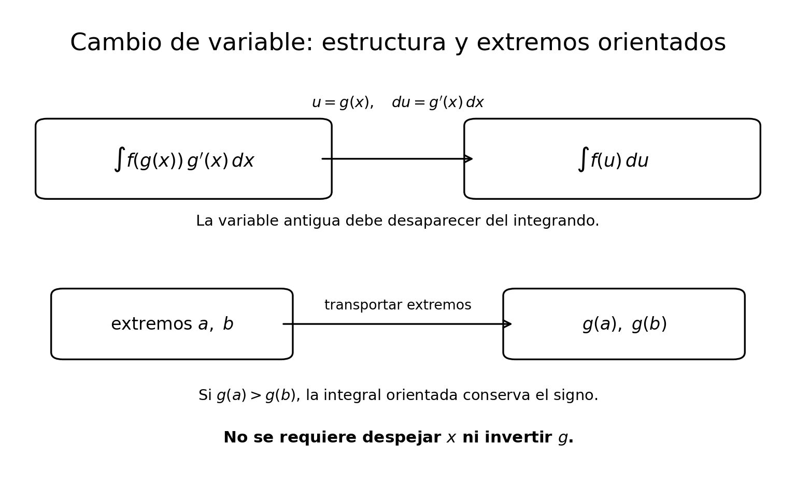
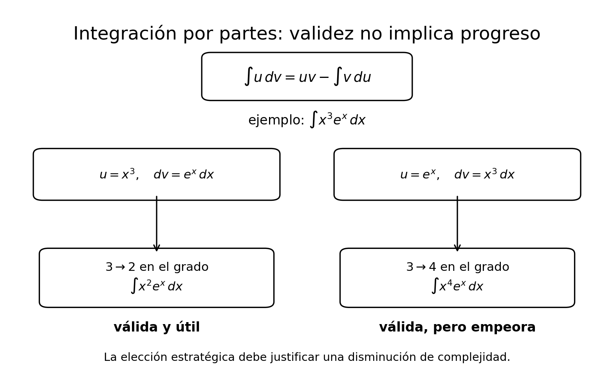
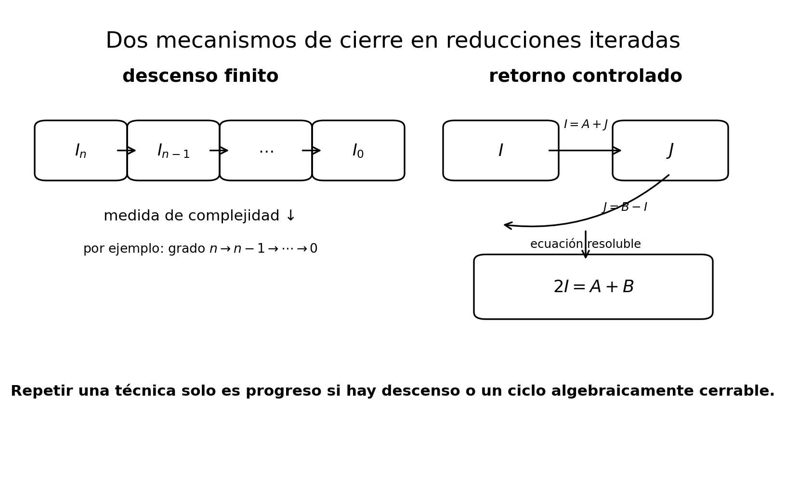
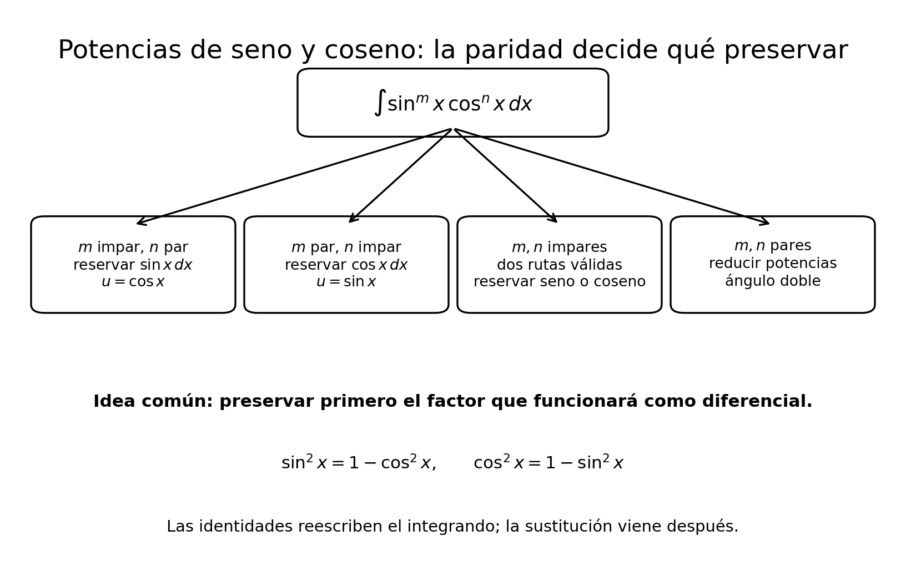
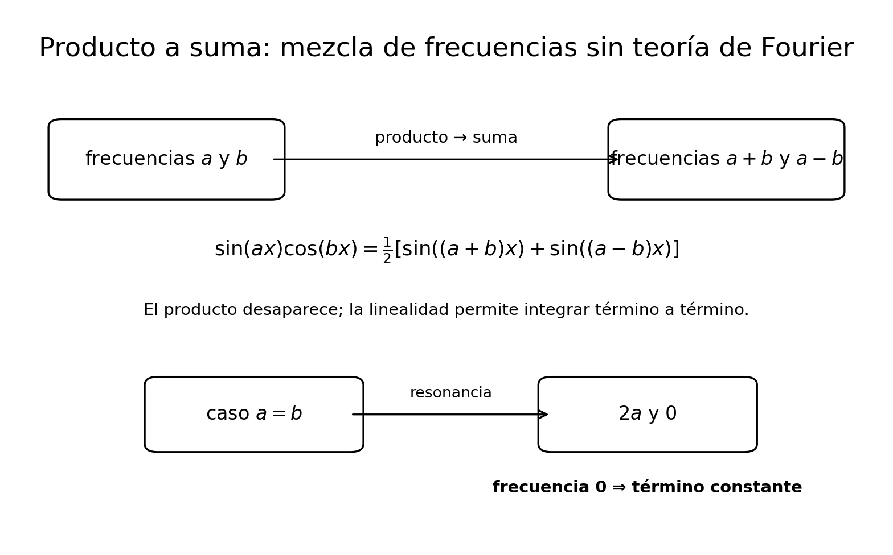
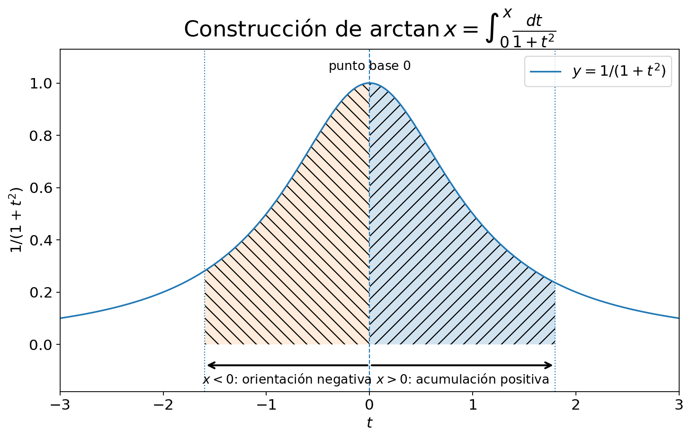
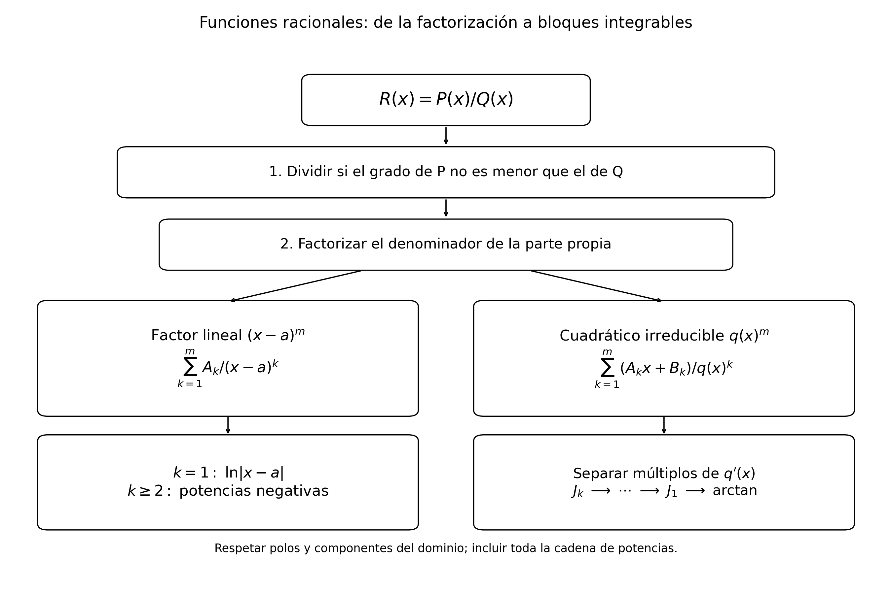
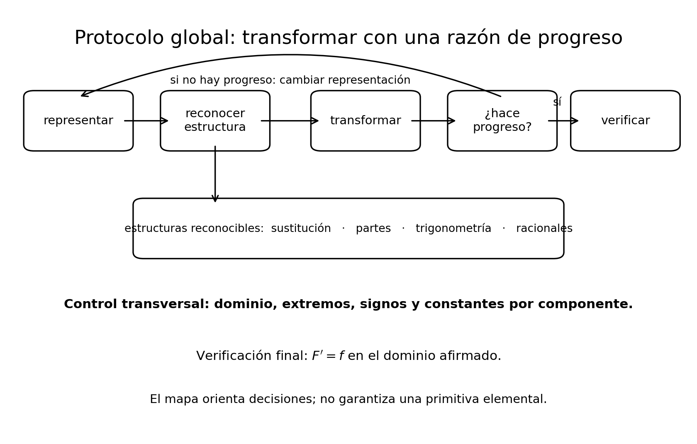

Técnicas de integración
18 Técnicas de integración
← Capítulo 17 · Índice del Tomo I · Capítulo 19 →
18.1 Del teorema fundamental al problema inverso
Las funciones circulares, sus identidades de adición, las derivadas y las ramas inversas utilizadas aquí fueron construidas en el laboratorio de Sección 17.10. Las técnicas de este capítulo se apoyan en esa construcción; cada sustitución conservará su dominio y su elección de rama.
El teorema fundamental del cálculo cambió el problema de evaluar una integral definida. Si conocemos una función \(F\) cuya derivada es \(f\), entonces Teorema 16.3 permite escribir
\[ \int_a^b f(x)\,dx = F(b)-F(a). \]
La dificultad se desplaza así hacia una pregunta anterior:
¿cómo encontramos una primitiva de \(f\) cuando no está inmediatamente a la vista?
Hasta ahora hemos trabajado sobre todo en la dirección
\[ \boxed{ F \longmapsto F' } \]
porque derivar una función conocida es un problema gobernado por reglas directas. Sabemos derivar sumas, productos, cocientes y composiciones; C18 añadió además un repertorio amplio de funciones elementales —logaritmos, exponenciales, potencias reales e hiperbólicas— cuyas derivadas ya forman parte de nuestra teoría.
En este capítulo recorreremos el camino contrario:
\[ \boxed{ f \longmapsto \text{buscar }F\text{ tal que }F'=f. } \]
Ese problema es más sutil. Las reglas de derivación nos dicen cómo destruir una estructura conocida para producir una derivada; integrar exige muchas veces reconstruir la estructura que pudo haberla producido.
Tres preguntas que no deben confundirse
Antes de aprender ninguna técnica conviene separar tres problemas distintos.
El primero es la existencia de una integral definida. Si \(f\) es Riemann integrable en \([a,b]\), entonces
\[ \int_a^b f(x)\,dx \]
ya está definido como un número real, independientemente de que sepamos calcularlo mediante una fórmula cerrada.
El segundo es la existencia de primitivas. Para una función continua, C17 mostró que la función de acumulación
\[ A_f(x)=\int_a^x f(t)\,dt \]
proporciona una primitiva. Por tanto, en ese caso no estamos intentando demostrar que alguna primitiva exista: ya sabemos construir una.
El tercer problema es diferente:
¿podemos expresar una primitiva mediante funciones que ya conocemos y manipularla de una forma útil para evaluar integrales concretas?
Éste es el problema propio de las técnicas de integración.
Para una función continua \(f\), la función
\[ F(x)=\int_a^x f(t)\,dt \]
es una primitiva rigurosamente construida.
Sin embargo, esa expresión puede no simplificarse de inmediato en términos de las funciones elementales que ya conocemos. Las técnicas de integración no crean la existencia de la primitiva: intentan reconocerla, reconstruirla o transformarla en una forma más explícita.
Esta distinción evita un error frecuente. Cuando una integral resulta difícil de calcular, no debemos concluir que «la integral no existe». Lo único que sabemos es que todavía no hemos encontrado una representación conveniente.
Un caso en el que no hay misterio
Consideremos
\[ f(x)=3x^2-2x+1. \]
Las reglas de derivación de potencias permiten reconocer término a término que
\[ F(x)=x^3-x^2+x \]
satisface
\[ F'(x)=3x^2-2x+1. \]
Aquí el problema inverso es casi transparente: cada término del integrando conserva la forma de una derivada elemental conocida.
Podemos escribir, por ejemplo,
\[ \int_0^2(3x^2-2x+1)\,dx = \bigl[x^3-x^2+x\bigr]_0^2 = 8-4+2 = 6. \]
No necesitamos todavía una «técnica» especial. Basta leer el integrando como una suma de derivadas reconocibles.
La situación cambia en cuanto las reglas de derivación mezclan varias estructuras.
La huella de una composición
Examinemos ahora
\[ 2x e^{x^2}. \]
La presencia de \(e^{x^2}\) sugiere mirar la derivada de una composición. Por la regla de la cadena,
\[ \frac{d}{dx}e^{x^2} = e^{x^2}\cdot2x. \]
Por tanto,
\[ \boxed{ 2x e^{x^2} = \frac{d}{dx}e^{x^2}. } \]
El factor \(2x\) no es un adorno: es exactamente la derivada de la función interior \(x^2\). La estructura completa del integrando reproduce la huella dejada por la regla de la cadena.
Así,
\[ \int 2x e^{x^2}\,dx = e^{x^2}+C. \]
Compárese con
\[ e^{x^2}. \]
Las dos expresiones contienen la misma exponencial compuesta, pero en la segunda ha desaparecido el factor que la regla de la cadena produciría al derivar. La semejanza superficial no basta para aplicar el mismo razonamiento.
Este contraste anticipa una idea central del capítulo:
\[ \boxed{ \text{antes de manipular un integrando, hay que identificar qué regla de derivación podría haberlo producido.} } \]
La huella de un producto
Consideremos ahora
\[ x e^x. \]
No es la derivada inmediata de \(xe^x\), porque la regla del producto da
\[ \frac{d}{dx}(xe^x) = e^x+xe^x. \]
Pero esta identidad puede leerse al revés. Despejando el término que nos interesa,
\[ xe^x = \frac{d}{dx}(xe^x)-e^x. \]
Como \(e^x\) tiene una primitiva conocida, obtenemos
\[ \int xe^x\,dx = xe^x-e^x+C. \]
La idea no consistió en adivinar la respuesta. Partimos de una regla de derivación ya conocida, reconocimos que el integrando aparecía como una parte de esa regla y reorganizamos la identidad hasta aislarlo.
Más adelante convertiremos este procedimiento en una fórmula general. Por ahora importa el mecanismo conceptual:
\[ \boxed{ \text{regla del producto} \longrightarrow \text{identidad reorganizada} \longrightarrow \text{primitiva}. } \]
Integrar exige elegir una representación
Un mismo integrando puede admitir varias formas algebraicamente equivalentes, pero no todas son igual de útiles.
Por ejemplo,
\[ \frac{x^2-1}{x-1} \]
parece una función racional que requeriría alguna técnica especial. Sin embargo, en todo punto de su dominio tenemos
\[ x^2-1=(x-1)(x+1), \]
y por tanto, para \(x\ne1\),
\[ \frac{x^2-1}{x-1}=x+1. \]
Después de simplificar la estructura algebraica, una primitiva es inmediata:
\[ \frac{x^2}{2}+x. \]
La integración no empieza necesariamente aplicando una fórmula de integración. Con frecuencia empieza reescribiendo el integrando.
Esto conecta el capítulo con una habilidad que ya apareció repetidamente en álgebra y cálculo diferencial: antes de calcular, hay que decidir qué forma de una expresión deja visible la estructura relevante.
Las técnicas como reglas de derivación leídas al revés
Los dos ejemplos anteriores sugieren la arquitectura básica de las técnicas que estudiaremos.
La regla de la cadena tiene la forma
\[ \frac{d}{dx}F(g(x)) = F'(g(x))g'(x). \]
Cuando un integrando contiene simultáneamente una función compuesta y la derivada de su parte interior, aparece una firma estructural que podremos explotar sistemáticamente.
La regla del producto tiene la forma
\[ \frac{d}{dx}(u(x)v(x)) = u'(x)v(x)+u(x)v'(x). \]
Cuando el integrando contiene uno de esos productos pero no toda la derivada, podremos reorganizar la identidad y transferir parte del problema a otra integral.
No derivaremos todavía aquí las fórmulas generales. Lo importante es ver que no aparecerán como recetas independientes de la teoría previa:
\[ \boxed{ \begin{array}{c} \text{regla de la cadena} \longleftrightarrow \text{cambio de variable},\\[4pt] \text{regla del producto} \longleftrightarrow \text{integración por partes}. \end{array} } \]
El sentido de las flechas será precisado y demostrado en los microtramos siguientes.
No existe un botón llamado «integrar»
Derivar una expresión elemental es, en gran medida, un procedimiento dirigido por la sintaxis: identificamos las operaciones que la construyen y aplicamos reglas conocidas desde fuera hacia dentro.
El problema inverso no tiene esa misma forma. Dado un integrando, puede ser necesario:
- simplificarlo antes de hacer nada;
- reconocer una composición oculta;
- fabricar el diferencial que falta mediante una constante;
- reconstruir un producto;
- separar una expresión en partes más manejables;
- elegir entre varias transformaciones posibles;
- abandonar una ruta que vuelve el problema más difícil.
Por eso las técnicas de integración no deben aprenderse como una lista de órdenes del tipo «si ves esto, haz aquello». Una coincidencia visual puede ser accidental. Lo que necesitamos identificar es una relación matemática precisa entre el integrando y alguna regla de derivación ya demostrada.
Este capítulo desarrollará procedimientos potentes para clases amplias de integrales, pero no afirmará que toda función continua pueda reducirse mediante un número finito de manipulaciones a una fórmula elemental familiar.
El teorema fundamental garantiza una primitiva mediante acumulación; otra cuestión es si esa primitiva admite una expresión elemental conveniente.
Una convención de lectura
Cuando escribamos
\[ \int f(x)\,dx=F(x)+C, \]
la igualdad significará que
\[ F'(x)=f(x) \]
en el dominio considerado y que, en un intervalo, todas las primitivas difieren de \(F\) por una constante, conforme a Proposición 16.2.
La proposición Proposición 16.2 fue formulada en C17 para un intervalo compacto \([a,b]\), pero su conclusión se extiende inmediatamente a cualquier intervalo \(I\). En efecto, si \(P\) y \(Q\) son primitivas de la misma función en \(I\) y \(x<y\) son dos puntos de \(I\), entonces \([x,y]\subseteq I\); al restringir \(P\) y \(Q\) a ese segmento, Proposición 16.2 muestra que \(P-Q\) tiene el mismo valor en \(x\) y en \(y\). Como los puntos eran arbitrarios, \(P-Q\) es constante en todo \(I\). Usaremos esta extensión elemental sin repetir el argumento en cada integral indefinida.
Esta notación de integral indefinida no sustituye la definición riemanniana de integral definida. Son objetos conceptualmente distintos:
\[ \boxed{ \begin{array}{c} \displaystyle \int_a^b f(x)\,dx \quad\text{es un número},\\[10pt] \displaystyle \int f(x)\,dx \quad\text{representa una familia de primitivas}. \end{array} } \]
Newton–Leibniz es precisamente el puente que permite usar la segunda para calcular la primera cuando disponemos de una primitiva adecuada.
La pregunta que guiará el capítulo
A partir de ahora, frente a un integrando no preguntaremos primero
«¿qué fórmula de integración debo aplicar?»
sino
«¿qué estructura de derivación está escondida aquí, y qué transformación la vuelve visible?»
Ese cambio de pregunta es la diferencia entre memorizar técnicas y comprenderlas.
Sin efectuar todavía ninguna sustitución formal, explica por qué
\[ 6x(3x^2+1)^4 \]
tiene la estructura de una regla de la cadena invertida. Identifica la función interior, su derivada y una función exterior cuya derivada produzca la potencia que aparece.
Después compara con
\[ (3x^2+1)^4. \]
¿Qué pieza estructural desapareció? ¿Por qué no basta con decir que «se parecen» para aplicar el mismo razonamiento?
18.2 Cambio de variable: invertir la regla de la cadena
El último ejercicio de §18.1 dejó visible la estructura que queremos formalizar. En
\[ 6x(3x^2+1)^4 \]
aparecen simultáneamente una función compuesta,
\[ (3x^2+1)^4, \]
y la derivada de su parte interior,
\[ \frac{d}{dx}(3x^2+1)=6x. \]
No se trata de una coincidencia tipográfica. Si definimos
\[ g(x)=3x^2+1 \]
y
\[ H(u)=\frac{u^5}{5}, \]
entonces
\[ H'(u)=u^4. \]
La regla de la cadena Teorema 7.4 produce
\[ \begin{aligned} \frac{d}{dx}H(g(x)) &=H'(g(x))g'(x)\\ &=(3x^2+1)^4\,6x. \end{aligned} \]
Por tanto,
\[ \boxed{ \int 6x(3x^2+1)^4\,dx = \frac{(3x^2+1)^5}{5}+C. } \]
El procedimiento que acabamos de ejecutar será llamado cambio de variable o sustitución. Su fundamento no es una nueva regla misteriosa de integración: es la regla de la cadena leída en sentido inverso.
La identidad básica
La regla de la cadena afirma que, si \(F'=f\), entonces
\[ \frac{d}{dx}F(g(x)) = f(g(x))g'(x). \]
Leída desde el integrando hacia la primitiva, esta misma igualdad dice que
\[ \boxed{ \int f(g(x))g'(x)\,dx = F(g(x))+C. } \]
La sustitución consiste en reconocer esta arquitectura incluso cuando la función interior \(g(x)\) está parcialmente oculta por la notación o por manipulaciones algebraicas.
Conviene formalizar también la versión para integrales definidas, porque allí el cambio de variable transforma no solo el integrando, sino también los extremos.
Teorema 18.1 Teorema (cambio de variable en una dimensión). Sean \(I,J\subseteq\mathbb R\) intervalos.
Forma para primitivas. Supongamos que
\[ g:I\to J \]
es diferenciable y que \(F:J\to\mathbb R\) es diferenciable con
\[ F'(u)=f(u) \qquad(u\in J). \]
Entonces \(F\circ g\) es una primitiva de
\[ x\longmapsto f(g(x))g'(x) \]
en \(I\). En consecuencia,
\[ \boxed{ \int f(g(x))g'(x)\,dx = F(g(x))+C. } \]
Forma para integrales definidas. Sean \(a<b\), supongamos que \(g:[a,b]\to J\) es continuamente diferenciable y que \(f:J\to\mathbb R\) es continua. Entonces
\[ \boxed{ \int_a^b f(g(x))g'(x)\,dx = \int_{g(a)}^{g(b)} f(u)\,du. } \]
Demostración. La primera parte es exactamente la regla de la cadena. Como
\[ F'(u)=f(u), \]
Teorema 7.4 da
\[ \begin{aligned} (F\circ g)'(x) &=F'(g(x))g'(x)\\ &=f(g(x))g'(x). \end{aligned} \]
Por tanto, \(F\circ g\) es una primitiva del integrando. La extensión de Proposición 16.2 justificada en §18.1 garantiza que todas las primitivas difieren de ella por una constante en el intervalo \(I\). Esto prueba la forma indefinida.
Para la forma definida, como \(g\) es continuamente diferenciable, es continua en \([a,b]\). Su imagen es compacta; sean
\[ m:=\min_{x\in[a,b]}g(x), \qquad M:=\max_{x\in[a,b]}g(x). \]
Como \(J\) es un intervalo y \(g([a,b])\subseteq J\), el segmento \([m,M]\) está contenido en \(J\). Si \(m=M\), entonces \(g\) es constante, \(g'=0\) y ambos miembros de la identidad definida son \(0\). Supongamos, pues, \(m<M\).
Definamos, para \(y\in[m,M]\),
\[ B(y)=\int_m^y f(u)\,du. \]
La restricción de \(f\) a \([m,M]\) es continua. Por Teorema 16.2,
\[ B'_{[m,M]}(y)=f(y) \qquad(y\in[m,M]). \]
Como \(g([a,b])\subseteq[m,M]\), la regla de la cadena Teorema 7.4 aplicada a \(B\circ g\) da
\[ \frac{d}{dx}B(g(x)) = f(g(x))g'(x). \]
El miembro derecho es continuo en \([a,b]\), de modo que Newton–Leibniz Teorema 16.3 permite escribir
\[ \begin{aligned} \int_a^b f(g(x))g'(x)\,dx &=B(g(b))-B(g(a))\\ &=\int_m^{g(b)}f(u)\,du-\int_m^{g(a)}f(u)\,du\\ &=\int_{g(a)}^{g(b)}f(u)\,du, \end{aligned} \]
por aditividad y orientación de la integral. Por consiguiente,
\[ \int_a^b f(g(x))g'(x)\,dx = \int_{g(a)}^{g(b)} f(u)\,du. \]
\(\blacksquare\)
Qué significa escribir \(u=g(x)\) y \(du=g'(x)\,dx\)
La notación tradicional comprime el teorema anterior en dos líneas:
\[ u=g(x), \qquad du=g'(x)\,dx. \]
Entonces el patrón
\[ f(g(x))g'(x)\,dx \]
se reescribe como
\[ f(u)\,du. \]
Así,
\[ \int f(g(x))g'(x)\,dx \quad\rightsquigarrow\quad \int f(u)\,du. \]
Esta escritura es extremadamente útil, pero conviene leerla correctamente dentro de la teoría que estamos desarrollando.
La igualdad
\[ du=g'(x)\,dx \]
es una notación que registra la transformación sugerida por la regla de la cadena. En este capítulo no necesitamos tratar \(du\) y \(dx\) como números independientes que puedan manipularse arbitrariamente.
La justificación matemática del cambio de variable está en Teorema 18.1.
La notación diferencial funciona precisamente porque conserva a la vista las dos piezas estructurales relevantes:
\[ \boxed{ \text{función interior }g(x) \qquad+ \qquad \text{su derivada }g'(x). } \]

Figura 18.1 resume las dos formas de Teorema 18.1 y separa con claridad el cambio de representación de cualquier supuesto de invertibilidad.
Primer ejemplo: la sustitución completa el patrón
Ejemplo 18.1 Una potencia compuesta. Calculemos
\[ \int 6x(3x^2+1)^4\,dx. \]
Elegimos
\[ u=3x^2+1. \]
Entonces
\[ du=6x\,dx. \]
Todo el integrando queda expresado en la nueva variable:
\[ \int 6x(3x^2+1)^4\,dx = \int u^4\,du. \]
La regla de la potencia da
\[ \int u^4\,du = \frac{u^5}{5}+C. \]
Volviendo a la variable original,
\[ \boxed{ \int 6x(3x^2+1)^4\,dx = \frac{(3x^2+1)^5}{5}+C. } \]
La comprobación debe hacerse siempre que una transformación sea nueva. Derivando,
\[ \begin{aligned} \frac{d}{dx} \left[ \frac{(3x^2+1)^5}{5} \right] &= \frac15\cdot5(3x^2+1)^4\cdot6x\\ &=6x(3x^2+1)^4. \end{aligned} \]
La sustitución no ha producido una fórmula distinta de la regla de la cadena: ha permitido reconstruir la composición que la derivación habría desarmado.
Cuando falta solo una constante
El patrón no tiene que aparecer con el coeficiente exacto desde el principio. Consideremos
\[ \int x e^{x^2}\,dx. \]
La función interior natural sigue siendo
\[ g(x)=x^2, \]
pero
\[ g'(x)=2x, \]
y el integrando contiene solamente \(x\).
La discrepancia es una constante multiplicativa, que podemos fabricar sin cambiar el problema:
\[ x = \frac12(2x). \]
Por linealidad de la familia de primitivas,
\[ \begin{aligned} \int x e^{x^2}\,dx &= \frac12\int 2x e^{x^2}\,dx\\ &= \frac12 e^{x^2}+C. \end{aligned} \]
En notación de sustitución,
\[ u=x^2, \qquad du=2x\,dx, \]
y por tanto
\[ \int x e^{x^2}\,dx = \frac12\int e^u\,du. \]
Esto sugiere una pregunta de diagnóstico muy útil:
¿la derivada de la función interior está presente exactamente, o al menos salvo un factor constante?
Si la respuesta es sí, el cambio de variable suele cerrar inmediatamente el problema.
Una integral definida: también cambian los extremos
Consideremos ahora
\[ \int_0^1 2x e^{x^2}\,dx. \]
Tomamos de nuevo
\[ u=x^2, \qquad du=2x\,dx. \]
Pero ahora debemos transformar también los extremos. Cuando
\[ x=0, \]
tenemos
\[ u=0, \]
y cuando
\[ x=1, \]
tenemos
\[ u=1. \]
Por Teorema 18.1,
\[ \begin{aligned} \int_0^1 2x e^{x^2}\,dx &= \int_0^1 e^u\,du\\ &= \bigl[e^u\bigr]_0^1\\ &=e-1. \end{aligned} \]
Una vez transformados los extremos, no hace falta volver a \(x\): la integral definida ya es un número.
En una integral definida hay dos procedimientos correctos:
- hacer la sustitución, transformar los extremos y terminar completamente en la variable nueva;
- hallar primero una primitiva en la variable nueva, regresar a \(x\) y evaluar después en los extremos originales.
Lo que debe evitarse es mezclar ambos procedimientos, por ejemplo conservar límites en \(x\) mientras el integrando ya está escrito en \(u\).
La orientación queda incorporada automáticamente
En Teorema 18.1 no hemos supuesto que
\[ g(a)<g(b). \]
Si ocurre lo contrario, el extremo transformado izquierdo puede quedar por encima del derecho. La integral orientada de C15 ya sabe manejar esa situación:
\[ \int_{g(a)}^{g(b)}f(u)\,du = - \int_{g(b)}^{g(a)}f(u)\,du. \]
Por eso no debemos reordenar los nuevos extremos silenciosamente. Si los intercambiamos, debe aparecer el signo menos correspondiente.
Más aún, la demostración tampoco exigió que \(g\) fuese monótona o inyectiva en \([a,b]\). La identidad procede de la composición \(A\circ g\) y de la regla de la cadena. Si \(g\) avanza y luego retrocede, el signo de \(g'(x)\) registra esas orientaciones locales y las contribuciones se combinan correctamente.
En esta versión del teorema no necesitamos resolver
\[ u=g(x) \]
para despejar \(x\) como función de \(u\).
Lo esencial es que el integrando tenga la forma
\[ f(g(x))g'(x). \]
La exigencia de invertibilidad aparecerá en otros contextos, pero no forma parte de la justificación básica de Teorema 18.1.
Una sustitución que no cierra
Volvamos al contraste planteado en §18.1:
\[ \int e^{x^2}\,dx. \]
La elección
\[ u=x^2 \]
produce formalmente
\[ du=2x\,dx. \]
Pero el integrando original no contiene el factor \(x\). A diferencia del ejemplo anterior, la pieza ausente no es una constante que podamos introducir y compensar.
Si intentáramos escribir
\[ dx=\frac{du}{2x}, \]
obtendríamos una expresión que todavía contiene \(x\):
\[ \int e^u\frac{du}{2x}. \]
La variable antigua no ha desaparecido, así que el cambio no ha transformado realmente el problema en una integral en \(u\).
Esto no demuestra que la integral «no exista». Tampoco demuestra aquí nada acerca de si posee o no una expresión elemental. Solo demuestra algo mucho más local y preciso:
\[ \boxed{ u=x^2 \text{ no es, por sí sola, una sustitución que cierre esta integral.} } \]
El fracaso es diagnosticable: falta la derivada de la función interior.
Cómo elegir la función interior
En ejemplos sencillos la elección de \(g\) parece evidente, pero conviene convertir la intuición en un protocolo.
Ante un integrando, busquemos una subexpresión \(g(x)\) que satisfaga dos condiciones:
- aparece dentro de otra función o potencia, de modo que tratarla como una unidad simplificaría la expresión;
- su derivada aparece en el resto del integrando, exactamente o salvo un factor constante.
Esquemáticamente,
\[ \boxed{ \underbrace{f(g(x))}_{\text{estructura exterior}} \; \underbrace{g'(x)}_{\text{huella interior}} } \]
es la firma más clara de una sustitución directa.
La elección no debe juzgarse por lo «bonita» que se vea \(u=g(x)\), sino por una pregunta verificable:
después de efectuar el cambio, ¿todo el integrando puede escribirse únicamente con la nueva variable y su diferencial?
Si todavía sobreviven dependencias no eliminadas de \(x\), la sustitución no ha cerrado el problema y debemos reconsiderarla o usar otra técnica.
Verificación: volver a derivar
Toda primitiva obtenida por sustitución admite un control inmediato. Si hemos concluido
\[ \int f(x)\,dx=F(x)+C, \]
la comprobación es
\[ F'(x)\stackrel{?}=f(x). \]
Este control es especialmente importante porque los errores típicos de sustitución son estructurales:
- olvidar un factor constante;
- omitir la derivada de la función interior;
- regresar incorrectamente de \(u\) a \(x\);
- transformar el integrando pero no los extremos de una integral definida;
- cambiar el orden de los extremos sin cambiar el signo.
La derivación de la respuesta detecta varios de estos errores de una sola vez.
Calcula
\[ \int_0^1\frac{3x^2}{1+x^3}\,dx \]
mediante un cambio de variable. Identifica la función interior, transforma los extremos y explica qué resultado de C18 permite evaluar la integral resultante.
Respuesta. Tomamos
\[ u=1+x^3, \qquad du=3x^2\,dx. \]
Los extremos se transforman como
\[ x=0\Longrightarrow u=1, \qquad x=1\Longrightarrow u=2. \]
Por tanto,
\[ \begin{aligned} \int_0^1\frac{3x^2}{1+x^3}\,dx &= \int_1^2\frac1u\,du\\ &= \bigl[\ln u\bigr]_1^2\\ &=\ln2-\ln1\\ &=\boxed{\ln2}, \end{aligned} \]
usando que \((\ln u)'=1/u\) y \(\ln1=0\), resultados establecidos en C18.
El cambio de variable queda así fundamentado como una inversión controlada de la regla de la cadena. La siguiente técnica nacerá de una lectura análoga de otra regla de derivación: la regla del producto.
18.3 Integración por partes: invertir la regla del producto
La sección anterior nació de una lectura inversa de la regla de la cadena. La integración por partes surge del mismo principio, pero ahora el punto de partida es la regla del producto.
Si \(u\) y \(v\) son funciones diferenciables, Teorema 7.2 afirma que
\[ \frac{d}{dx}\bigl(u(x)v(x)\bigr) = u'(x)v(x)+u(x)v'(x). \]
Para integrar no necesitamos inventar una identidad nueva. Basta reorganizar la que ya conocemos:
\[ u(x)v'(x) = \frac{d}{dx}\bigl(u(x)v(x)\bigr)-u'(x)v(x). \]
Esta igualdad contiene toda la técnica. Al pasar de derivadas a primitivas, obtenemos esquemáticamente
\[ \boxed{ \int u(x)v'(x)\,dx = u(x)v(x)-\int u'(x)v(x)\,dx. } \]
La dificultad no estará en justificar la fórmula, sino en elegir la descomposición de modo que la nueva integral sea más sencilla que la original.
La fórmula y su demostración
Teorema 18.2 Teorema (integración por partes). Sea \(I\subseteq\mathbb R\) un intervalo y sean \(u,v:I\to\mathbb R\) funciones continuamente diferenciables.
Entonces, en el sentido de familias de primitivas,
\[ \boxed{ \int u(x)v'(x)\,dx = u(x)v(x)-\int u'(x)v(x)\,dx. } \]
Si \(a<b\) y \([a,b]\subseteq I\), entonces
\[ \boxed{ \int_a^b u(x)v'(x)\,dx = \bigl[u(x)v(x)\bigr]_a^b - \int_a^b u'(x)v(x)\,dx. } \]
Demostración. Por la regla del producto Teorema 7.2,
\[ \bigl(uv\bigr)'=u'v+uv'. \]
Reordenando,
\[ uv'=(uv)'-u'v. \]
Como \(u\) y \(v\) son continuamente diferenciables, el producto \(u'v\) es continuo. Fijemos \(x_0\in I\) y definamos
\[ H(x):=\int_{x_0}^x u'(t)v(t)\,dt, \qquad x\in I. \]
La integral está bien definida porque, para cada \(x\in I\), el segmento cerrado de extremos \(x_0\) y \(x\) está contenido en \(I\) y el integrando es continuo allí. En cualquier segmento compacto contenido en \(I\), la función \(H\) difiere por una constante de una función de acumulación con base en el extremo izquierdo; por Teorema 16.2,
\[ H'(x)=u'(x)v(x). \]
Así, \(H\) es una primitiva de \(u'v\) en todo \(I\). Entonces
\[ \begin{aligned} (uv-H)' &=(uv)'-H'\\ &=(u'v+uv')-u'v\\ &=uv'. \end{aligned} \]
Así, \(uv-H\) es una primitiva de \(uv'\). Como \(H\) representa una elección de
\[ \int u'v\,dx, \]
obtenemos
\[ \int uv'\,dx = uv- \int u'v\,dx, \]
con la constante de integración absorbida en la familia resultante. La extensión de Proposición 16.2 establecida en §18.1 garantiza que esta descripción alcanza a todas las primitivas en el intervalo \(I\).
Para la forma definida integramos la identidad
\[ uv'=(uv)'-u'v \]
sobre \([a,b]\). Por linealidad,
\[ \int_a^b uv'\,dx = \int_a^b(uv)'\,dx - \int_a^b u'v\,dx. \]
Newton–Leibniz Teorema 16.3 aplicado al producto \(uv\) da
\[ \int_a^b(uv)'\,dx = u(b)v(b)-u(a)v(a). \]
Por tanto,
\[ \int_a^b u(x)v'(x)\,dx = \bigl[u(x)v(x)\bigr]_a^b - \int_a^b u'(x)v(x)\,dx. \]
\(\blacksquare\)
La demostración muestra exactamente de dónde procede el signo menos: aparece al despejar uno de los dos términos de la regla del producto. No es una convención añadida al integrar.
La notación \(u\,dv\)
La fórmula suele escribirse de manera comprimida como
\[ \boxed{ \int u\,dv = uv- \int v\,du. } \]
La correspondencia con la forma rigurosa es
\[ du=u'(x)\,dx, \qquad dv=v'(x)\,dx. \]
Así,
\[ u\,dv=u(x)v'(x)\,dx \]
y
\[ v\,du=v(x)u'(x)\,dx. \]
Escribir
\[ \int u\,dv=uv-\int v\,du \]
es una abreviación útil de Teorema 18.2. No estamos tratando \(du\), \(dv\) y \(dx\) como cantidades independientes que puedan separarse arbitrariamente.
La técnica es válida porque la regla del producto proporciona una identidad entre derivadas.
Recuperar el ejemplo de §18.1
En §18.1 observamos que
\[ \int x e^x\,dx \]
podía reconstruirse a partir de la regla del producto. Ahora podemos expresar ese razonamiento sistemáticamente.
Elegimos
\[ u=x, \qquad dv=e^x\,dx. \]
Entonces
\[ du=dx, \qquad v=e^x. \]
Aplicando Teorema 18.2,
\[ \begin{aligned} \int xe^x\,dx &=xe^x-\int e^x\,dx\\ &=xe^x-e^x+C. \end{aligned} \]
La nueva integral es más sencilla que la original porque diferenciar \(x\) lo reduce a la constante \(1\), mientras integrar \(e^x\) no modifica su forma.
Podemos verificar el resultado derivando:
\[ \begin{aligned} \frac{d}{dx}\bigl(xe^x-e^x\bigr) &=e^x+xe^x-e^x\\ &=xe^x. \end{aligned} \]
La comprobación reproduce exactamente la cancelación que dio origen a la fórmula.
Un factor que estaba oculto: integrar \(\ln x\)
La integración por partes puede aplicarse incluso cuando el integrando no parece, a primera vista, un producto. En
\[ \int \ln x\,dx, \qquad x>0, \]
podemos hacer visible el factor constante:
\[ \ln x=\ln x\cdot1. \]
Ejemplo 18.2 Una primitiva de \(\ln x\). Para \(x>0\),
\[ \boxed{ \int\ln x\,dx = x\ln x-x+C. } \]
Tomamos
\[ u=\ln x, \qquad dv=dx. \]
Los resultados de C18 dan
\[ du=\frac1x\,dx, \]
mientras que
\[ v=x. \]
Por integración por partes,
\[ \begin{aligned} \int\ln x\,dx &=x\ln x-\int x\frac1x\,dx\\ &=x\ln x-\int1\,dx\\ &=x\ln x-x+C. \end{aligned} \]
La simplificación decisiva fue
\[ x\cdot\frac1x=1, \]
válida porque estamos trabajando en el dominio \(x>0\).
La derivación confirma inmediatamente el resultado:
\[ \frac{d}{dx}(x\ln x-x) = \ln x+1-1 = \ln x. \]
Este ejemplo muestra una habilidad que conviene incorporar desde ahora: un producto útil puede estar presente aunque uno de sus factores sea simplemente \(1\).
Elegir \(u\) y \(dv\) es parte del problema
La fórmula
\[ \int u\,dv=uv-\int v\,du \]
es simétrica en su origen —proviene de un producto—, pero las dos elecciones posibles no suelen ser igualmente útiles.
La pregunta estratégica es:
¿qué factor conviene diferenciar y qué factor conviene integrar para que la integral restante sea más sencilla?
Dos criterios suelen ser especialmente útiles:
- escoger como \(u\) una parte que se simplifique al derivarla;
- escoger como \(dv\) una parte cuya primitiva \(v\) podamos obtener directamente.
Estos criterios no son un algoritmo infalible. Son una manera de evaluar si la transformación hace progreso real.
Consideremos, por ejemplo, la estructura
\[ \int x^3e^x\,dx. \]
Si elegimos
\[ u=x^3, \qquad dv=e^x\,dx, \]
entonces
\[ du=3x^2\,dx, \qquad v=e^x, \]
y la integral restante contiene \(x^2e^x\): el grado del polinomio ha disminuido.
Si elegimos al revés,
\[ u=e^x, \qquad dv=x^3\,dx, \]
entonces
\[ du=e^x\,dx, \qquad v=\frac{x^4}{4}, \]
y la nueva integral contiene
\[ \frac{x^4}{4}e^x, \]
que ha aumentado el grado del polinomio. La fórmula sigue siendo correcta, pero la elección ha empeorado el problema.
Una aplicación de integración por partes puede ser algebraicamente válida y, sin embargo, no constituir progreso.
La técnica exige dos controles distintos:
- validez: la descomposición debe satisfacer las hipótesis de Teorema 18.2;
- utilidad: la integral nueva debería ser más manejable que la original.

Figura 18.2 hace visible la distinción entre validez y progreso: Teorema 18.2 garantiza la identidad, no que toda elección de \(u\) y \(dv\) simplifique el problema.
La forma definida y el término de borde
En una integral definida la fórmula contiene un término adicional que no debe perderse:
\[ \boxed{ \int_a^b u(x)v'(x)\,dx = \bigl[u(x)v(x)\bigr]_a^b - \int_a^b u'(x)v(x)\,dx. } \]
El producto
\[ \bigl[u(x)v(x)\bigr]_a^b = u(b)v(b)-u(a)v(a) \]
se denomina habitualmente término de borde. Procede directamente de integrar la derivada del producto mediante Newton–Leibniz.
Por ejemplo,
\[ \int_0^1 xe^x\,dx \]
se calcula con las mismas elecciones
\[ u=x, \qquad dv=e^x\,dx. \]
Entonces
\[ \begin{aligned} \int_0^1xe^x\,dx &=\bigl[xe^x\bigr]_0^1-\int_0^1e^x\,dx\\ &=e-(e-1)\\ &=\boxed{1}. \end{aligned} \]
En una integral indefinida el producto \(uv\) forma parte de la primitiva; en una integral definida, ese mismo producto se evalúa en los dos extremos.
Dos errores de lectura que conviene evitar
El primero consiste en olvidar que \(v\) debe ser una primitiva de la parte elegida como \(dv\). Si escribimos
\[ dv=q(x)\,dx, \]
la técnica necesita que podamos obtener una función \(v\) con
\[ v'(x)=q(x). \]
Elegir como \(dv\) una expresión más difícil de integrar que la original no aporta nada.
El segundo error consiste en pensar que la fórmula garantiza automáticamente una integral más simple. Teorema 18.2 solo garantiza la identidad. La disminución de complejidad depende de la elección de los papeles.
Podemos resumir el diagnóstico en cuatro preguntas:
- ¿qué producto veo o puedo hacer visible?
- ¿qué factor se simplifica al derivarlo?
- ¿qué factor puedo integrar con facilidad?
- después de aplicar la fórmula, ¿la integral restante es realmente más sencilla?
Verificación: la regla del producto debe reaparecer
Si una aplicación de partes produce una candidata \(F\), la prueba final sigue siendo derivar.
Por ejemplo,
\[ F(x)=x\ln x-x \]
debe satisfacer, para \(x>0\),
\[ F'(x)=\ln x. \]
El control no es accesorio. Como la técnica procede de la regla del producto, una derivación correcta debe reconstruir los dos términos del producto y mostrar la cancelación correspondiente.
Calcula
\[ \int_1^e\ln x\,dx \]
mediante integración por partes. Identifica \(u\), \(dv\), \(du\) y \(v\), y conserva explícitamente el término de borde.
Respuesta. Tomamos
\[ u=\ln x, \qquad dv=dx, \]
de modo que
\[ du=\frac1x\,dx, \qquad v=x. \]
Por Teorema 18.2,
\[ \begin{aligned} \int_1^e\ln x\,dx &=\bigl[x\ln x\bigr]_1^e -\int_1^e1\,dx\\ &=(e\ln e-\ln1)-(e-1)\\ &=e-(e-1)\\ &=\boxed{1}, \end{aligned} \]
porque C18 estableció
\[ \ln e=1, \qquad \ln1=0. \]
La integración por partes queda así fundamentada como una reorganización de la regla del producto. La fórmula es universal bajo sus hipótesis; la elección de los papeles es la parte estratégica.
18.4 Repetir con propósito: partes iteradas y fórmulas de reducción
En §18.3 vimos que una sola aplicación de integración por partes puede sustituir una integral por otra más sencilla. Pero algunos productos no se resuelven en un único paso.
El ejemplo
\[ \int x^3e^x\,dx \]
ya anticipó el mecanismo. Si elegimos
\[ u=x^3, \qquad dv=e^x\,dx, \]
entonces
\[ du=3x^2\,dx, \qquad v=e^x, \]
y Teorema 18.2 produce
\[ \int x^3e^x\,dx = x^3e^x-3\int x^2e^x\,dx. \]
No hemos terminado, pero sí hemos avanzado: el grado del factor polinómico bajó de \(3\) a \(2\).
La nueva integral tiene exactamente la misma estructura que la anterior. Podemos aplicar partes otra vez:
\[ \int x^2e^x\,dx = x^2e^x-2\int xe^x\,dx. \]
Y una tercera aplicación da
\[ \int xe^x\,dx = xe^x-\int e^x\,dx = xe^x-e^x+C. \]
Sustituyendo hacia atrás,
\[ \begin{aligned} \int x^2e^x\,dx &=x^2e^x-2(xe^x-e^x)+C\\ &=e^x(x^2-2x+2)+C, \end{aligned} \]
y finalmente
\[ \boxed{ \int x^3e^x\,dx = e^x(x^3-3x^2+6x-6)+C. } \]
Aquí la repetición no fue mecánica. En cada paso conservamos la misma decisión estratégica:
\[ \boxed{ \text{diferenciar el polinomio} \quad+ \quad \text{integrar la exponencial}. } \]
La primera operación reduce el grado; la segunda conserva la forma de \(e^x\). Por eso el proceso termina después de un número finito de pasos.
De un cálculo particular a una fórmula de reducción
El ejemplo anterior pertenece a una familia entera. Para \(n\in\mathbb N\) consideremos
\[ I_n=\int x^n e^x\,dx. \]
Si \(n\ge1\), elegimos
\[ u=x^n, \qquad dv=e^x\,dx. \]
Entonces
\[ du=nx^{n-1}\,dx, \qquad v=e^x, \]
y la integración por partes da
\[ I_n = x^ne^x-nI_{n-1}. \]
Esta identidad expresa una integral de orden \(n\) mediante otra de orden \(n-1\). Una relación de este tipo se llama fórmula de reducción.
Proposición 18.1 Proposición (reducción de \(\int x^ne^x\,dx\)). Para todo \(n\in\mathbb N\) con \(n\ge1\),
\[ \boxed{ I_n=x^ne^x-nI_{n-1}, \qquad I_n:=\int x^ne^x\,dx. } \]
En particular,
\[ \boxed{ \int x^ne^x\,dx = e^x \sum_{k=0}^{n} (-1)^k\frac{n!}{(n-k)!}x^{n-k} +C. } \]
Demostración. La relación de reducción ya fue obtenida por Teorema 18.2. Falta justificar la fórmula cerrada.
Para \(n=0\),
\[ \int e^x\,dx=e^x+C, \]
y la suma del enunciado contiene solamente el término \(k=0\).
Supongamos ahora que la fórmula es válida para \(n-1\). Entonces
\[ I_{n-1} = e^x \sum_{k=0}^{n-1} (-1)^k\frac{(n-1)!}{(n-1-k)!}x^{n-1-k} +C. \]
Usando la relación de reducción,
\[ \begin{aligned} I_n &=x^ne^x-nI_{n-1}\\ &=e^x x^n -e^x \sum_{k=0}^{n-1} (-1)^k\frac{n!}{(n-1-k)!}x^{n-1-k} +C. \end{aligned} \]
En la suma hacemos el cambio de índice \(j=k+1\). Entonces \(j\) recorre \(1,\ldots,n\) y
\[ -(-1)^k=(-1)^{k+1}=(-1)^j, \]
mientras
\[ (n-1-k)!=(n-j)!. \]
Por tanto,
\[ I_n = e^x x^n + e^x \sum_{j=1}^{n} (-1)^j\frac{n!}{(n-j)!}x^{n-j} +C. \]
El término \(e^xx^n\) es precisamente el término \(j=0\) de la misma suma, porque
\[ \frac{n!}{n!}=1. \]
Así,
\[ I_n = e^x \sum_{j=0}^{n} (-1)^j\frac{n!}{(n-j)!}x^{n-j} +C. \]
La inducción queda cerrada. \(\blacksquare\)
Qué hace que una reducción sea útil
La palabra reducción no significa simplemente que el índice haya cambiado. Debemos comprobar que la nueva integral se encuentre realmente más cerca de una forma ya conocida.
En la familia anterior,
\[ I_n \longrightarrow I_{n-1} \longrightarrow \cdots \longrightarrow I_1 \longrightarrow I_0, \]
y
\[ I_0=\int e^x\,dx \]
es inmediata.
Por tanto, existe una medida de complejidad que disminuye en cada paso: el grado del polinomio.
Aplicar integración por partes varias veces tiene sentido cuando podemos identificar alguna cantidad que disminuye o alguna estructura que se simplifica.
En \(x^ne^x\), esa cantidad es el exponente \(n\). Si una repetición no disminuye ninguna complejidad reconocible, puede producir una cadena infinita de problemas equivalentes o incluso más difíciles.
Esta idea es más general que la fórmula concreta. Al utilizar una técnica repetidamente conviene poder responder:
¿qué se hace estrictamente más simple después de cada paso?
Si no podemos señalarlo, todavía no hemos justificado que la iteración constituya una estrategia.
Cuando la integral original reaparece
Hay otro comportamiento importante. A veces repetir integración por partes no hace desaparecer progresivamente una familia, sino que después de algunos pasos reproduce la integral original.
Eso no tiene por qué ser un fracaso.
Ejemplo 18.3 Una integral que vuelve sobre sí misma. Calculemos
\[ \int e^x\cos x\,dx. \]
Denotemos por
\[ I=\int e^x\cos x\,dx \]
la familia de primitivas que buscamos. Elegimos
\[ u=\cos x, \qquad dv=e^x\,dx. \]
Entonces
\[ du=-\sin x\,dx, \qquad v=e^x, \]
y Teorema 18.2 da
\[ I = e^x\cos x + \int e^x\sin x\,dx. \]
La nueva integral todavía no es elemental a simple vista. Aplicamos partes una segunda vez, ahora a
\[ \int e^x\sin x\,dx. \]
Tomamos
\[ u=\sin x, \qquad dv=e^x\,dx, \]
de modo que
\[ du=\cos x\,dx, \qquad v=e^x. \]
Así,
\[ \int e^x\sin x\,dx = e^x\sin x-I. \]
Sustituyendo en la primera identidad,
\[ I = e^x\cos x+e^x\sin x-I. \]
Como las integrales indefinidas representan familias de primitivas, las constantes aditivas que aparecen en los dos pasos se absorben en una única constante. Reuniendo los dos términos que representan a \(I\),
\[ 2I=e^x(\sin x+\cos x)+C, \]
y por tanto
\[ \boxed{ \int e^x\cos x\,dx = \frac{e^x}{2}(\sin x+\cos x)+C. } \]
La verificación elimina cualquier ambigüedad sobre las constantes:
\[ \begin{aligned} \frac{d}{dx} \left[ \frac{e^x}{2}(\sin x+\cos x) \right] &= \frac{e^x}{2}(\sin x+\cos x) + \frac{e^x}{2}(\cos x-\sin x)\\ &=e^x\cos x. \end{aligned} \]
La integral original reapareció con coeficiente \(-1\). Precisamente por eso pudimos trasladarla al otro miembro y resolver una ecuación algebraica para la familia de primitivas.
Dos tipos de cierre
Los ejemplos de esta sección exhiben dos formas distintas en que una iteración de partes puede terminar.
En la primera,
\[ \int x^ne^x\,dx, \]
cada aplicación reduce el grado del polinomio hasta llegar a una integral conocida.
En la segunda,
\[ \int e^x\cos x\,dx, \]
el proceso entra en un ciclo y recupera la integral inicial. El ciclo resulta útil porque produce una ecuación lineal en la integral desconocida.
Podemos resumir ambos mecanismos así:
\[ \boxed{ \begin{array}{c} \text{reducción finita} \quad\text{o}\quad \text{retorno controlado a la integral inicial}. \end{array} } \]

Figura 18.3 compara la reducción de Proposición 18.1 con el ciclo de Ejemplo 18.3: repetir una técnica tiene sentido cuando existe descenso o cierre, no por mera reiteración.
La repetición sin ninguno de estos mecanismos no debe considerarse automáticamente progreso.
No perder las constantes al trabajar con integrales indefinidas
En una cadena corta solemos escribir
\[ \int f(x)\,dx=F(x)+C \]
y absorber las constantes intermedias en una sola constante final. Este procedimiento es legítimo porque estamos describiendo una familia de primitivas.
Sin embargo, cuando la integral original reaparece en ambos miembros, conviene recordar qué significa realmente la notación. No estamos manipulando un número llamado \(\int f(x)\,dx\); estamos relacionando funciones primitivas que son únicas salvo constantes.
Por eso hay dos formas seguras de cerrar un cálculo cíclico:
- mantener explícitas las constantes hasta el final y absorberlas entonces en una sola;
- obtener una candidata mediante el álgebra formal y verificarla derivando.
En este libro utilizaremos con frecuencia la segunda, porque hace visible de inmediato si la identidad final es correcta.
Si una iteración conduce a una relación de la forma
\[ I=A+\lambda I, \]
solo podemos despejar \(I\) cuando
\[ 1-\lambda\ne0. \]
Si \(\lambda=1\), la relación no determina \(I\); simplemente reproduce una identidad. La aparición de la integral original es útil únicamente cuando el coeficiente permite aislarla.
Antes de seguir
Calcula mediante integración por partes repetida
\[ \int x^2\cos x\,dx. \]
En cada paso explica qué cantidad disminuye.
Respuesta. Tomamos primero
\[ u=x^2, \qquad dv=\cos x\,dx, \]
de modo que
\[ du=2x\,dx, \qquad v=\sin x. \]
Entonces
\[ \int x^2\cos x\,dx = x^2\sin x-2\int x\sin x\,dx. \]
Para la integral restante elegimos
\[ u=x, \qquad dv=\sin x\,dx, \]
por lo que
\[ du=dx, \qquad v=-\cos x. \]
Así,
\[ \int x\sin x\,dx = -x\cos x+\int\cos x\,dx = -x\cos x+\sin x+C. \]
Sustituyendo,
\[ \boxed{ \int x^2\cos x\,dx = x^2\sin x+2x\cos x-2\sin x+C. } \]
En las dos aplicaciones la cantidad que disminuye es el grado del factor polinómico:
\[ 2\longrightarrow1\longrightarrow0. \]
La derivación de la respuesta recupera \(x^2\cos x\) y cierra la comprobación.
La integración por partes repetida no añade una técnica distinta de Teorema 18.2. Añade una forma de organizar una secuencia de aplicaciones: identificar una medida de complejidad que disminuye, una fórmula de reducción que acerca a un caso base o un ciclo que devuelve la integral inicial con un coeficiente algebraicamente resoluble.
18.5 Potencias trigonométricas: reescribir antes de sustituir
Hasta ahora las dos técnicas principales del capítulo nacieron leyendo al revés reglas de derivación: la regla de la cadena produjo el cambio de variable y la regla del producto produjo la integración por partes. Hay, sin embargo, integrandos en los que ninguna de esas estructuras aparece de inmediato.
En esos casos el primer paso puede ser cambiar la representación algebraica del integrando.
Las potencias de seno y coseno constituyen un laboratorio especialmente claro. Consideremos la familia
\[ \int \sin^m x\,\cos^n x\,dx, \qquad m,n\in\mathbb N. \]
La pregunta decisiva no será todavía «¿qué fórmula integro?», sino
¿qué identidad trigonométrica vuelve visible una sustitución elemental?
Las tres identidades que organizan la familia
Utilizaremos
\[ \sin^2x+\cos^2x=1, \]
\[ \sin(2x)=2\sin x\cos x, \]
y
\[ \cos(2x)=\cos^2x-\sin^2x. \]
Combinando la primera y la tercera obtenemos las fórmulas de reducción de potencia
\[ \boxed{ \cos^2x=\frac{1+\cos(2x)}2, } \]
y
\[ \boxed{ \sin^2x=\frac{1-\cos(2x)}2. } \]
Estas identidades no integran nada por sí mismas. Su función es reescribir el integrando en una forma donde aparezca la huella de una derivada conocida.
La paridad de los exponentes indicará qué identidad conviene utilizar.
Proposición 18.2 Proposición (estrategia para potencias de seno y coseno). Sean \(m,n\in\mathbb N\).
Para estudiar
\[ \int \sin^m x\,\cos^n x\,dx, \]
pueden aplicarse los principios siguientes.
Si \(n\) es impar, se separa un factor \(\cos x\) y se transforma el resto mediante \[ \cos^2x=1-\sin^2x. \] La sustitución natural es \[ u=\sin x, \qquad du=\cos x\,dx. \]
Si \(m\) es impar, se separa un factor \(\sin x\) y se transforma el resto mediante \[ \sin^2x=1-\cos^2x. \] La sustitución natural es \[ u=\cos x, \qquad du=-\sin x\,dx. \]
Si \(m\) y \(n\) son ambos pares, las identidades \[ \sin^2x=\frac{1-\cos(2x)}2, \qquad \cos^2x=\frac{1+\cos(2x)}2 \] reducen las potencias. En casos sencillos esta reescritura cierra directamente la integral; para potencias más altas pueden quedar productos o potencias de cosenos con argumentos múltiples, que exigirán una descomposición algebraica adicional.
Justificación. Supongamos primero que \(n\) es impar. Escribimos
\[ n=2r+1. \]
Entonces
\[ \cos^n x = \cos^{2r}x\cos x = (\cos^2x)^r\cos x = (1-\sin^2x)^r\cos x. \]
Por tanto,
\[ \sin^m x\cos^n x\,dx = \sin^m x(1-\sin^2x)^r\cos x\,dx. \]
Con
\[ u=\sin x, \qquad du=\cos x\,dx, \]
todo el integrando queda convertido en una expresión polinómica en \(u\).
El caso \(m\) impar es análogo. Si
\[ m=2r+1, \]
entonces
\[ \sin^m x = (1-\cos^2x)^r\sin x, \]
y la sustitución \(u=\cos x\) absorbe el factor \(\sin x\,dx\).
Si ambos exponentes son pares, ninguna de las dos potencias contiene un factor aislado \(\sin x\) o \(\cos x\) que pueda funcionar directamente como diferencial. En ese caso las fórmulas de reducción de potencia disminuyen los exponentes y hacen visible la estructura de ángulos múltiples. En ejemplos sencillos, como los que siguen, la reducción termina directamente en una suma integrable. Para potencias mayores pueden aparecer todavía productos de cosenos con argumentos distintos; §18.6 construirá precisamente la herramienta producto-a-suma que permite continuar esa descomposición. Por tanto, la afirmación de esta sección es de progreso estructural, no de cierre universal usando solo las dos fórmulas de reducción de potencia. \(\blacksquare\)
Exponente impar: reservar exactamente el factor que falta
Ejemplo 18.4 Ejemplo. Calculemos
\[ \int \sin^3x\cos^2x\,dx. \]
El exponente del seno es impar. Separamos un factor \(\sin x\):
\[ \sin^3x = \sin^2x\sin x = (1-\cos^2x)\sin x. \]
Así,
\[ \int \sin^3x\cos^2x\,dx = \int (1-\cos^2x)\cos^2x\sin x\,dx. \]
Tomamos
\[ u=\cos x, \qquad du=-\sin x\,dx. \]
Entonces
\[ \begin{aligned} \int \sin^3x\cos^2x\,dx &=-\int(1-u^2)u^2\,du\\ &=-\int(u^2-u^4)\,du\\ &=-\frac{u^3}{3}+\frac{u^5}{5}+C. \end{aligned} \]
Volviendo a \(x\),
\[ \boxed{ \int \sin^3x\cos^2x\,dx = -\frac{\cos^3x}{3} +\frac{\cos^5x}{5} +C. } \]
La elección de la sustitución no fue adivinatoria. El exponente impar permitió reservar precisamente el factor \(\sin x\,dx\) que exige la derivada de \(\cos x\).
Si ambos exponentes son impares, hay más de una ruta
Consideremos
\[ \int \sin^3x\cos^3x\,dx. \]
Podemos reservar un factor \(\sin x\) y sustituir \(u=\cos x\), o reservar un factor \(\cos x\) y sustituir \(u=\sin x\).
Ambas rutas son correctas porque ambos exponentes son impares. La elección no cambia la familia de primitivas; solo cambia la representación intermedia.
Por ejemplo, separando \(\cos x\),
\[ \sin^3x\cos^3x = \sin^3x(1-\sin^2x)\cos x, \]
y con \(u=\sin x\) obtenemos una integral polinómica.
No siempre existe una única sustitución natural.
Cuando dos estructuras distintas cierran completamente el cambio de variable, podemos elegir la que produzca la expresión más simple o la que facilite mejor la verificación posterior.
Ambos exponentes pares: reducir potencias
Cuando los dos exponentes son pares no queda disponible un factor aislado de seno o coseno para una sustitución inmediata.
El caso más sencillo ya muestra el mecanismo:
\[ \int \sin^2x\,dx. \]
Usamos
\[ \sin^2x = \frac{1-\cos(2x)}2. \]
Entonces
\[ \begin{aligned} \int\sin^2x\,dx &= \frac12\int1\,dx - \frac12\int\cos(2x)\,dx\\ &= \frac x2- \frac14\sin(2x)+C. \end{aligned} \]
La segunda integral utiliza solamente la sustitución lineal \(u=2x\).
El patrón se vuelve más visible en un producto de dos potencias pares.
Ejemplo 18.5 Ejemplo. Calculemos
\[ \int \sin^2x\cos^2x\,dx. \]
Primero utilizamos
\[ 2\sin x\cos x=\sin(2x). \]
Por tanto,
\[ \sin^2x\cos^2x = \frac14\sin^2(2x). \]
Aplicamos ahora la reducción de potencia al ángulo \(2x\):
\[ \sin^2(2x) = \frac{1-\cos(4x)}2. \]
Así,
\[ \sin^2x\cos^2x = \frac18\bigl(1-\cos(4x)\bigr), \]
y
\[ \begin{aligned} \int\sin^2x\cos^2x\,dx &= \frac18\int1\,dx - \frac18\int\cos(4x)\,dx\\ &= \boxed{ \frac{x}{8}-\frac{\sin(4x)}{32}+C }. \end{aligned} \]
Aquí no apareció una nueva regla de integración. El trabajo decisivo fue convertir una potencia trigonométrica en una suma de términos integrables.
Reescribir no es simplificar a ciegas
Una identidad es útil solo si acerca el integrando a una estructura que ya sabemos manejar.
Por ejemplo, ante
\[ \int\sin^5x\cos^2x\,dx, \]
sería posible comenzar a reemplazar todas las potencias mediante fórmulas de ángulo múltiple. Pero eso destruiría la huella más simple: el exponente impar de \(\sin x\) ya nos entrega un factor \(\sin x\,dx\) para la sustitución \(u=\cos x\).
La estrategia preferible es, por tanto,
\[ \boxed{ \text{preservar primero la derivada que necesitamos;} \quad \text{reescribir después el resto.} } \]
Esto prolonga el principio de §18.2. Una sustitución no se elige por parecido visual, sino porque transforma todo el integrando en la nueva variable.
Un árbol de decisión, no una tabla para memorizar
Para la familia
\[ \int \sin^m x\cos^n x\,dx \]
podemos resumir el diagnóstico así:
\[ \boxed{ \begin{array}{c} n\text{ impar} \Longrightarrow \text{reservar }\cos x\,dx, \quad u=\sin x,\\[6pt] m\text{ impar} \Longrightarrow \text{reservar }\sin x\,dx, \quad u=\cos x,\\[6pt] m,n\text{ pares} \Longrightarrow \text{reducir potencias con ángulo doble}. \end{array} } \]

Figura 18.4 representa Proposición 18.2 como una decisión reconstruible desde las derivadas de seno y coseno, no como una tabla mnemotécnica autónoma.
La tabla no reemplaza la comprensión. Cada fila debe poder reconstruirse desde las derivadas
\[ (\sin x)'=\cos x, \qquad (\cos x)'=-\sin x \]
y desde la identidad
\[ \sin^2x+\cos^2x=1. \]
Verificación y control de la representación
Después de obtener una primitiva debemos volver a derivar, como en las secciones anteriores.
En integrales trigonométricas este control cumple además otra función: dos respuestas aparentemente distintas pueden representar la misma familia de primitivas porque las identidades trigonométricas permiten escribir una misma función de varias maneras.
Por tanto, si dos expresiones difieren en apariencia, no debemos concluir de inmediato que una es incorrecta. Podemos:
- derivar ambas y comprobar que producen el mismo integrando;
- o restarlas y utilizar identidades trigonométricas para verificar que la diferencia es constante.
La derivada sigue siendo el criterio decisivo.
Calcula
\[ \int\sin^3x\cos^4x\,dx. \]
Explica por qué conviene preservar un factor \(\sin x\) y no reducir todas las potencias desde el comienzo.
Respuesta. Como el exponente del seno es impar,
\[ \sin^3x = (1-\cos^2x)\sin x. \]
Entonces
\[ \int\sin^3x\cos^4x\,dx = \int(1-\cos^2x)\cos^4x\sin x\,dx. \]
Tomamos
\[ u=\cos x, \qquad du=-\sin x\,dx. \]
Por tanto,
\[ \begin{aligned} \int\sin^3x\cos^4x\,dx &=-\int(1-u^2)u^4\,du\\ &=-\int(u^4-u^6)\,du\\ &=-\frac{u^5}{5}+\frac{u^7}{7}+C. \end{aligned} \]
Volviendo a \(x\),
\[ \boxed{ \int\sin^3x\cos^4x\,dx = -\frac{\cos^5x}{5} +\frac{\cos^7x}{7} +C. } \]
Reservar \(\sin x\,dx\) conserva exactamente la derivada de \(\cos x\); reducir todas las potencias desde el comienzo ocultaría esa estructura y alargaría innecesariamente el cálculo.
Las potencias trigonométricas muestran una tercera clase de trabajo dentro de las técnicas de integración. No hemos añadido una nueva operación: primero reescribimos mediante identidades, después reconocemos una de las técnicas ya demostradas y finalmente verificamos derivando. La representación adecuada puede ser tan importante como la fórmula de integración que se aplica después.
18.6 Productos trigonométricos de frecuencias distintas: convertir productos en sumas
La sección anterior estudió potencias de seno y coseno con el mismo argumento. Allí la paridad de los exponentes nos indicaba qué factor convenía preservar para fabricar un diferencial.
Aparece ahora otra familia:
\[ \sin(ax)\cos(bx), \qquad \cos(ax)\cos(bx), \qquad \sin(ax)\sin(bx), \]
con \(a,b>0\).
Para el diagnóstico estratégico no perdemos generalidad esencial con esta convención: un signo negativo se absorbe mediante la paridad de seno y coseno, mientras que una frecuencia nula deja un solo factor trigonométrico y se integra directamente.
Cuando \(a\) y \(b\) son distintos, ninguna sustitución simple del tipo
\[ u=\sin(ax) \qquad\text{o}\qquad u=\cos(bx) \]
elimina por sí sola el otro factor. La dificultad no está en hallar una función interior adecuada, sino en que el integrando contiene dos oscilaciones con escalas distintas.
La estrategia será cambiar nuevamente de representación:
\[ \boxed{ \text{producto trigonométrico} \longrightarrow \text{suma de funciones trigonométricas simples}. } \]
Después de esa transformación, la linealidad de la integral permite trabajar término a término.
Las fórmulas de adición contienen la transformación
Partimos de las identidades
\[ \sin(\alpha+\beta) = \sin\alpha\cos\beta+ \cos\alpha\sin\beta, \]
\[ \sin(\alpha-\beta) = \sin\alpha\cos\beta- \cos\alpha\sin\beta, \]
\[ \cos(\alpha+\beta) = \cos\alpha\cos\beta- \sin\alpha\sin\beta, \]
y
\[ \cos(\alpha-\beta) = \cos\alpha\cos\beta+ \sin\alpha\sin\beta. \]
La transformación que necesitamos no es una identidad adicional independiente. Se obtiene sumando o restando estas cuatro relaciones.
Proposición 18.3 Proposición (identidades producto-a-suma). Para cualesquiera \(\alpha,\beta\in\mathbb R\),
\[ \boxed{ \sin\alpha\cos\beta = \frac12\bigl[ \sin(\alpha+\beta) + \sin(\alpha-\beta) \bigr], } \]
\[ \boxed{ \cos\alpha\cos\beta = \frac12\bigl[ \cos(\alpha+\beta) + \cos(\alpha-\beta) \bigr], } \]
y
\[ \boxed{ \sin\alpha\sin\beta = \frac12\bigl[ \cos(\alpha-\beta) - \cos(\alpha+\beta) \bigr]. } \]
Demostración. Sumando las dos fórmulas del seno obtenemos
\[ \sin(\alpha+\beta)+\sin(\alpha-\beta) = 2\sin\alpha\cos\beta, \]
lo que prueba la primera identidad.
Sumando las dos fórmulas del coseno,
\[ \cos(\alpha+\beta)+\cos(\alpha-\beta) = 2\cos\alpha\cos\beta, \]
y queda probada la segunda.
Finalmente, restando la fórmula de \(\cos(\alpha+\beta)\) de la de \(\cos(\alpha-\beta)\),
\[ \cos(\alpha-\beta)-\cos(\alpha+\beta) = 2\sin\alpha\sin\beta. \]
Esto prueba la tercera. \(\blacksquare\)
Las identidades muestran una estructura importante. Un producto con frecuencias \(a\) y \(b\) se descompone en términos con frecuencias
\[ a+b \qquad\text{y}\qquad a-b. \]
No hemos integrado todavía; solo hemos reemplazado una representación multiplicativa por una aditiva.
Primer ejemplo: dos frecuencias distintas
Ejemplo 18.6 Ejemplo. Calculemos
\[ \int\sin(3x)\cos(2x)\,dx. \]
Aplicamos Proposición 18.3 con
\[ \alpha=3x, \qquad \beta=2x. \]
Entonces
\[ \sin(3x)\cos(2x) = \frac12\bigl[ \sin(5x)+\sin x \bigr]. \]
Por linealidad,
\[ \begin{aligned} \int\sin(3x)\cos(2x)\,dx &= \frac12\int\sin(5x)\,dx + \frac12\int\sin x\,dx\\ &= -\frac1{10}\cos(5x) -\frac12\cos x +C. \end{aligned} \]
Por tanto,
\[ \boxed{ \int\sin(3x)\cos(2x)\,dx = -\frac{\cos(5x)}{10} -\frac{\cos x}{2} +C. } \]
Cada término final se integra mediante una sustitución lineal elemental. La dificultad original estaba enteramente en el producto, no en las funciones resultantes.
El caso resonante: cuando las frecuencias coinciden
La fórmula producto-a-suma sigue siendo válida cuando \(a=b\), pero uno de los nuevos argumentos se vuelve cero.
Por ejemplo,
\[ \cos(ax)\cos(ax) = \frac12\bigl[ \cos(2ax)+\cos0 \bigr]. \]
Como
\[ \cos0=1, \]
obtenemos
\[ \boxed{ \cos^2(ax) = \frac12\bigl[1+\cos(2ax)\bigr], } \]
que no es otra cosa que la fórmula de reducción de potencia utilizada en §18.5.
De modo análogo,
\[ \sin(ax)\sin(ax) = \frac12\bigl[1-\cos(2ax)\bigr]. \]
El caso \(a=b\) no exige una teoría aparte. Simplemente produce una frecuencia cero, es decir, un término constante.
Las fórmulas de §18.5 y las identidades producto-a-suma de esta sección no son técnicas desconectadas.
La reducción
\[ \sin^2x = \frac{1-\cos(2x)}2 \]
es exactamente el caso \(\alpha=\beta=x\) de la identidad para \(\sin\alpha\sin\beta\).
Un segundo ejemplo: el producto de dos senos
Ejemplo 18.7 Ejemplo. Calculemos
\[ \int\sin(4x)\sin x\,dx. \]
Por Proposición 18.3,
\[ \sin(4x)\sin x = \frac12\bigl[ \cos(3x)-\cos(5x) \bigr]. \]
Entonces
\[ \begin{aligned} \int\sin(4x)\sin x\,dx &= \frac12\int\cos(3x)\,dx - \frac12\int\cos(5x)\,dx\\ &= \frac16\sin(3x) - \frac1{10}\sin(5x) +C. \end{aligned} \]
Así,
\[ \boxed{ \int\sin(4x)\sin x\,dx = \frac{\sin(3x)}6 - \frac{\sin(5x)}{10} +C. } \]
La verificación por derivación recupera el producto original después de recombinar las funciones mediante la misma identidad producto-a-suma.
La frecuencia como medida de la transformación
La notación
\[ \sin(ax), \qquad \cos(ax) \]
muestra explícitamente una escala \(a\). No necesitamos todavía desarrollar una teoría de Fourier para aprovechar esta observación.
Al multiplicar dos oscilaciones, las identidades anteriores generan las combinaciones
\[ a+b \qquad\text{y}\qquad a-b. \]
Por eso un producto que parece más complicado puede convertirse en una suma de términos más sencillos.

Figura 18.5 visualiza la transformación de Proposición 18.3 sin introducir teoría de Fourier: solo registra las combinaciones \(a+b\) y \(a-b\) ya demostradas algebraicamente.
Este fenómeno también explica por qué algunas integrales definidas sobre intervalos completos se cancelan.
Consideremos, por ejemplo,
\[ \int_0^{2\pi}\sin(3x)\sin x\,dx. \]
Producto-a-suma da
\[ \sin(3x)\sin x = \frac12\bigl[ \cos(2x)-\cos(4x) \bigr]. \]
Por tanto,
\[ \begin{aligned} \int_0^{2\pi}\sin(3x)\sin x\,dx &= \frac12\int_0^{2\pi}\cos(2x)\,dx - \frac12\int_0^{2\pi}\cos(4x)\,dx\\ &=0. \end{aligned} \]
No necesitamos extraer todavía una teoría general de ortogonalidad. El cálculo concreto basta para mostrar que las oscilaciones completas pueden cancelar sus contribuciones sobre un período común.
En §18.2 transformábamos la variable porque el integrando tenía la forma
\[ f(g(x))g'(x). \]
Aquí el paso decisivo es distinto: reemplazamos una identidad por otra algebraicamente equivalente y solo después integramos cada término.
No toda transformación útil de un integrando es un cambio de variable.
Cuándo conviene usar producto-a-suma
Ante un producto trigonométrico, conviene distinguir dos situaciones.
Si tenemos potencias del mismo argumento,
\[ \sin^m x\cos^n x, \]
la paridad de los exponentes y las identidades de §18.5 suelen ofrecer la ruta más corta.
Si tenemos funciones de argumentos distintos,
\[ \sin(ax)\cos(bx), \qquad \cos(ax)\cos(bx), \qquad \sin(ax)\sin(bx), \]
producto-a-suma suele eliminar el producto en un solo paso.
Podemos resumir el diagnóstico como
\[ \boxed{ \begin{array}{c} \text{mismo argumento con potencias} \Longrightarrow \text{paridad y reducción de potencia},\\[5pt] \text{argumentos lineales distintos} \Longrightarrow \text{producto-a-suma}. \end{array} } \]
La regla no es una prohibición absoluta. Es un criterio para elegir la representación que produce menos trabajo.
Verificación: recomponer lo que descompusimos
Las respuestas obtenidas en esta sección pueden verificarse de dos maneras complementarias.
La primera es derivar la candidata final y comprobar que reaparece el integrando original.
La segunda es derivar y luego utilizar Proposición 18.3 para recomponer la suma resultante en el producto inicial.
En ambos casos, la identidad trigonométrica y la derivación sirven como controles mutuamente independientes de los signos y de los factores de frecuencia.
Calcula
\[ \int\sin(5x)\cos(2x)\,dx. \]
Explica por qué una sustitución directa no elimina ambos factores y utiliza producto-a-suma para convertir el problema en dos integrales elementales.
Respuesta. Por Proposición 18.3,
\[ \sin(5x)\cos(2x) = \frac12\bigl[ \sin(7x)+\sin(3x) \bigr]. \]
Entonces
\[ \begin{aligned} \int\sin(5x)\cos(2x)\,dx &= \frac12\int\sin(7x)\,dx + \frac12\int\sin(3x)\,dx\\ &= -\frac1{14}\cos(7x) -\frac16\cos(3x) +C. \end{aligned} \]
Por tanto,
\[ \boxed{ \int\sin(5x)\cos(2x)\,dx = -\frac{\cos(7x)}{14} -\frac{\cos(3x)}6 +C. } \]
Una sustitución como \(u=\sin(5x)\) absorbería un factor \(\cos(5x)\,dx\), no \(\cos(2x)\,dx\); de modo análogo, \(u=\cos(2x)\) exigiría un factor \(\sin(2x)\,dx\). Ninguna de esas derivadas está presente. Producto-a-suma elimina el obstáculo estructural.
Los productos trigonométricos de frecuencias distintas refuerzan así el principio general del capítulo: antes de buscar una primitiva, debemos elegir una representación que deje actuar a las reglas ya conocidas. En este caso no cambiamos la variable ni repetimos partes; descomponemos un producto en una suma y explotamos la linealidad.
18.7 Funciones racionales I: dividir y descomponer en factores lineales simples
Las secciones anteriores mostraron que una representación adecuada puede convertir una integral difícil en otra ya conocida. Las funciones racionales ofrecen un ejemplo algebraico especialmente sistemático.
Consideremos
\[ R(x)=\frac{P(x)}{Q(x)}, \]
donde \(P,Q\) son polinomios reales y \(Q\) no es el polinomio nulo. Antes de buscar una primitiva debemos responder dos preguntas:
- ¿es la fracción propia, es decir, satisface \(\deg P<\deg Q\)?
- si ya es propia, ¿cómo está factorizado el denominador?
La primera pregunta se resuelve mediante división polinómica; la segunda, en el caso que estudiaremos aquí, mediante fracciones parciales.
Primero separar la parte polinómica
Si
\[ \deg P\ge \deg Q, \]
la división polinómica permite escribir
\[ P(x)=S(x)Q(x)+T(x), \qquad \deg T<\deg Q. \]
Por tanto, en todo punto donde \(Q(x)\ne0\),
\[ \boxed{ \frac{P(x)}{Q(x)} = S(x)+\frac{T(x)}{Q(x)}. } \]
La integral queda separada en una parte polinómica y una función racional propia.
Por ejemplo,
\[ x^2+1=(x-1)(x+1)+2, \]
de modo que, para \(x\ne1\),
\[ \frac{x^2+1}{x-1} = x+1+\frac{2}{x-1}. \]
Así, sobre cualquier intervalo que no contenga \(1\),
\[ \begin{aligned} \int\frac{x^2+1}{x-1}\,dx &= \int(x+1)\,dx +2\int\frac{dx}{x-1}\\ &= \frac{x^2}{2}+x+2\ln|x-1|+C. \end{aligned} \]
El valor absoluto no es opcional: Corolario 17.4 estableció que
\[ \frac{d}{dx}\ln|x-a| = \frac1{x-a} \qquad(x\ne a). \]
El problema propio con raíces simples
Supongamos ahora que
\[ \deg P<r \]
y que el denominador tiene la forma
\[ Q(x)=\prod_{j=1}^{r}(x-a_j), \]
donde
\[ a_1,\ldots,a_r \]
son números reales distintos.
Queremos reemplazar la fracción racional por una suma de términos elementales:
\[ \frac{P(x)}{Q(x)} \stackrel{?}{=} \sum_{j=1}^{r}\frac{A_j}{x-a_j}. \]
La igualdad, si existe, no se adivina. Los coeficientes quedan determinados por los valores de \(P\) en las raíces del denominador.
Proposición 18.4 Proposición (fracciones parciales para factores lineales simples). Sean \(a_1,\ldots,a_r\in\mathbb R\) distintos y sea
\[ Q(x)=\prod_{j=1}^{r}(x-a_j). \]
Si \(P\in\mathbb R[x]\) satisface \(\deg P<r\), entonces existen únicos números reales \(A_1,\ldots,A_r\) tales que
\[ \boxed{ \frac{P(x)}{Q(x)} = \sum_{j=1}^{r}\frac{A_j}{x-a_j} } \]
para todo
\[ x\notin\{a_1,\ldots,a_r\}. \]
Además,
\[ \boxed{ A_j = \frac{P(a_j)}{\displaystyle\prod_{k\ne j}(a_j-a_k)} \qquad(1\le j\le r). } \]
Demostración. Multiplicar la identidad buscada por \(Q(x)\) conduce a
\[ P(x) \stackrel{?}{=} \sum_{j=1}^{r} A_j \prod_{k\ne j}(x-a_k). \]
Si esta identidad es verdadera, al evaluar en \(x=a_j\) todos los sumandos salvo uno se anulan y obtenemos necesariamente
\[ P(a_j) = A_j\prod_{k\ne j}(a_j-a_k). \]
Como los \(a_j\) son distintos,
\[ a_j-a_k\ne0 \qquad(k\ne j), \]
de modo que el producto del denominador es no nulo y
\[ A_j = \frac{P(a_j)}{\displaystyle\prod_{k\ne j}(a_j-a_k)}. \]
Esto prueba la unicidad de los posibles coeficientes.
Para probar la existencia, definamos esos números \(A_j\) mediante la fórmula anterior y consideremos
\[ H(x) := P(x) - \sum_{j=1}^{r} A_j\prod_{k\ne j}(x-a_k). \]
Cada sumando tiene grado a lo sumo \(r-1\), y \(\deg P<r\); por tanto,
\[ \deg H\le r-1 \]
salvo que \(H\) sea el polinomio nulo. Por la elección de los coeficientes,
\[ H(a_j)=0 \qquad(1\le j\le r). \]
Así, \(H\) tiene al menos \(r\) raíces reales distintas. Un polinomio no nulo de grado a lo sumo \(r-1\) no puede tener \(r\) raíces distintas. Luego
\[ H\equiv0, \]
y la identidad polinómica queda demostrada. Dividiendo por \(Q(x)\) en su dominio obtenemos la descomposición racional. \(\blacksquare\)
La proposición convierte una sola fracción en una suma de términos cuya primitiva ya conocemos por Corolario 17.4. En efecto,
\[ \boxed{ \int\frac{P(x)}{\prod_{j=1}^{r}(x-a_j)}\,dx = \sum_{j=1}^{r}A_j\ln|x-a_j|+C } \]
sobre cada intervalo que no contenga ninguna de las raíces \(a_j\).
Un ejemplo con dos polos reales
Ejemplo 18.8 Ejemplo. Calculemos
\[ \int\frac{3x+5}{(x-1)(x+2)}\,dx. \]
La fracción ya es propia. Buscamos
\[ \frac{3x+5}{(x-1)(x+2)} = \frac{A}{x-1} + \frac{B}{x+2}. \]
Por Proposición 18.4, para \(a_1=1\),
\[ A = \frac{3(1)+5}{1-(-2)} = \frac83, \]
y para \(a_2=-2\),
\[ B = \frac{3(-2)+5}{-2-1} = \frac13. \]
Por tanto,
\[ \frac{3x+5}{(x-1)(x+2)} = \frac{8}{3(x-1)} + \frac{1}{3(x+2)}. \]
Integramos término a término:
\[ \boxed{ \int\frac{3x+5}{(x-1)(x+2)}\,dx = \frac83\ln|x-1| + \frac13\ln|x+2| +C. } \]
La verificación puede hacerse diferenciando la respuesta y recombinando las dos fracciones sobre el denominador común.
El dominio no desaparece al descomponer
La función racional del ejemplo no está definida en
\[ x=-2 \qquad\text{ni en}\qquad x=1. \]
Su dominio es
\[ (-\infty,-2) \cup (-2,1) \cup (1,\infty). \]
En cada uno de esos intervalos, todas las primitivas difieren por una constante. Pero las constantes de intervalos distintos son independientes.
Cuando escribimos
\[ \frac83\ln|x-1| + \frac13\ln|x+2| +C, \]
la expresión describe la familia de primitivas sobre un intervalo contenido en el dominio.
Sobre todo el dominio desconectado no existe una razón para imponer la misma constante en las tres componentes. La unicidad «salvo constante» de Proposición 16.2 es un resultado sobre intervalos.
Este detalle también explica por qué una simplificación algebraica nunca debe hacernos olvidar los puntos excluidos del dominio original.
Coeficientes por sustitución, no por magia
En el caso de dos factores es frecuente escribir
\[ \frac{P(x)}{(x-a)(x-b)} = \frac{A}{x-a}+\frac{B}{x-b} \]
y luego «tapar» un factor para encontrar \(A\) o \(B\).
El procedimiento es legítimo porque, después de multiplicar por el denominador,
\[ P(x)=A(x-b)+B(x-a), \]
y sustituir \(x=a\) o \(x=b\) anula exactamente uno de los dos términos.
No estamos cancelando informalmente un factor en un punto donde la fracción racional no está definida.
Primero multiplicamos y obtenemos una identidad entre polinomios, válida para todo \(x\); después evaluamos esa identidad en las raíces del denominador.
La distinción importa porque evita introducir una sustitución ilegítima en la función racional original.
Un caso con tres factores
Ejemplo 18.9 Ejemplo. Descompongamos
\[ \frac{2x^2+3x-2}{(x-1)(x+1)(x+2)}. \]
Por Proposición 18.4,
\[ A = \frac{2(1)^2+3(1)-2}{(1+1)(1+2)} = \frac12, \]
para el factor \(x-1\);
\[ B = \frac{2(-1)^2+3(-1)-2}{(-1-1)(-1+2)} = \frac32, \]
para el factor \(x+1\); y
\[ D = \frac{2(-2)^2+3(-2)-2}{(-2-1)(-2+1)} = 0 \]
para el factor \(x+2\).
Así,
\[ \frac{2x^2+3x-2}{(x-1)(x+1)(x+2)} = \frac{1}{2(x-1)} + \frac{3}{2(x+1)}. \]
Que uno de los coeficientes resulte cero no constituye una excepción: significa simplemente que ese término no contribuye a la descomposición.
Por tanto, sobre cada componente del dominio,
\[ \boxed{ \int \frac{2x^2+3x-2}{(x-1)(x+1)(x+2)}\,dx = \frac12\ln|x-1| + \frac32\ln|x+1| +C. } \]
Qué hemos resuelto y qué queda fuera
La combinación de división polinómica y Proposición 18.4 resuelve una clase completa:
\[ \boxed{ \begin{array}{c} \text{función racional}\\[2pt] \Downarrow\\[2pt] \text{división si es impropia}\\[2pt] \Downarrow\\[2pt] \text{fracción propia con raíces reales simples}\\[2pt] \Downarrow\\[2pt] \text{suma de }\dfrac{A_j}{x-a_j}\\[2pt] \Downarrow\\[2pt] \text{logaritmos }\ln|x-a_j|. \end{array} } \]
No hemos tratado todavía dos situaciones diferentes:
- factores lineales repetidos, como \((x-a)^m\) con \(m\ge2\);
- factores cuadráticos reales sin raíces reales.
La primera exigirá ampliar el patrón de fracciones parciales; la segunda requerirá estudiar primitivas que no se reducen únicamente a logaritmos mediante la teoría disponible hasta aquí.
Calcula
\[ \int\frac{2x+1}{(x-2)(x+1)}\,dx. \]
Determina primero los coeficientes de las fracciones parciales y especifica el dominio sobre el que se interpreta cada familia de primitivas.
Respuesta. Buscamos
\[ \frac{2x+1}{(x-2)(x+1)} = \frac{A}{x-2} + \frac{B}{x+1}. \]
Por Proposición 18.4,
\[ A = \frac{2(2)+1}{2-(-1)} = \frac53, \]
y
\[ B = \frac{2(-1)+1}{-1-2} = \frac13. \]
Así,
\[ \frac{2x+1}{(x-2)(x+1)} = \frac{5}{3(x-2)} + \frac{1}{3(x+1)}, \]
y por tanto
\[ \boxed{ \int\frac{2x+1}{(x-2)(x+1)}\,dx = \frac53\ln|x-2| + \frac13\ln|x+1| +C. } \]
El dominio es
\[ (-\infty,-1) \cup (-1,2) \cup (2,\infty), \]
y el símbolo \(C\) puede tomar un valor independiente en cada componente.
Las fracciones parciales muestran otra forma de reconocer estructura. No estamos invirtiendo directamente una regla de derivación: desarmamos algebraicamente una función racional hasta convertirla en una suma de derivadas logarítmicas conocidas. El siguiente paso será ampliar esta descomposición cuando los factores lineales se repiten, sin abandonar todavía el repertorio de primitivas ya construido.
18.8 Funciones racionales II: factores lineales repetidos
La sección anterior resolvió el caso en que el denominador propio se descompone como producto de factores lineales distintos. Allí cada raíz \(a_j\) producía un único término
\[ \frac{A_j}{x-a_j}. \]
Cuando un factor se repite, esta forma ya no contiene suficientes grados de libertad. Si aparece, por ejemplo,
\[ (x-a)^2, \]
no basta en general con escribir
\[ \frac{A}{(x-a)^2}. \]
Debemos permitir también el término de orden inferior
\[ \frac{B}{x-a}. \]
Para una potencia \((x-a)^m\), el patrón completo será
\[ \boxed{ \frac{A_1}{x-a} + \frac{A_2}{(x-a)^2} + \cdots + \frac{A_m}{(x-a)^m}. } \]
La repetición del factor en el denominador produce, por tanto, una cadena completa de potencias recíprocas.
Por qué aparecen todas las potencias
Consideremos primero un solo factor repetido. Sea \(P\) un polinomio con
\[ \deg P<m. \]
Como cualquier polinomio puede escribirse en potencias de \(x-a\), existen únicos coeficientes
\[ c_0,c_1,\ldots,c_{m-1} \]
tales que
\[ P(x) = c_0+c_1(x-a)+\cdots+c_{m-1}(x-a)^{m-1}. \]
Dividiendo por \((x-a)^m\) obtenemos
\[ \frac{P(x)}{(x-a)^m} = \frac{c_{m-1}}{x-a} + \frac{c_{m-2}}{(x-a)^2} + \cdots + \frac{c_0}{(x-a)^m}. \]
Así, incluso antes de combinar distintos factores, la forma de la descomposición ya viene impuesta por la expansión polinómica alrededor de la raíz repetida.
La descomposición general cuando todas las raíces son reales
La idea anterior se combina con §18.7 cuando aparecen varias raíces con multiplicidades distintas.
Proposición 18.5 Proposición (fracciones parciales con factores lineales repetidos). Sean
\[ a_1,\ldots,a_r\in\mathbb R \]
distintos, sean
\[ m_1,\ldots,m_r\in\mathbb N, \qquad m_j\ge1, \]
y definamos
\[ Q(x) = \prod_{j=1}^{r}(x-a_j)^{m_j}. \]
Si \(P\in\mathbb R[x]\) satisface
\[ \deg P<\deg Q, \]
entonces existen únicos números reales \(A_{j,k}\), con
\[ 1\le j\le r, \qquad 1\le k\le m_j, \]
tales que
\[ \boxed{ \frac{P(x)}{Q(x)} = \sum_{j=1}^{r} \sum_{k=1}^{m_j} \frac{A_{j,k}}{(x-a_j)^k} } \]
para todo \(x\) del dominio de la función racional.
Demostración. Sea
\[ N:=\deg Q=\sum_{j=1}^{r}m_j. \]
Para cada \(j\) escribimos
\[ S_j(x) := \frac{Q(x)}{(x-a_j)^{m_j}} = \prod_{i\ne j}(x-a_i)^{m_i}. \]
Como las raíces son distintas,
\[ S_j(a_j)\ne0. \]
La identidad racional buscada equivale, después de multiplicar por \(Q(x)\), a la identidad polinómica
\[ P(x) = \sum_{j=1}^{r} \sum_{k=1}^{m_j} A_{j,k} \frac{Q(x)}{(x-a_j)^k}. \]
Para abreviar, definamos
\[ \psi_{j,k}(x) := \frac{Q(x)}{(x-a_j)^k} = (x-a_j)^{m_j-k}S_j(x). \]
Fijemos una raíz \(a_j\). Todo término \(\psi_{i,k}\) con \(i\ne j\) contiene el factor
\[ (x-a_j)^{m_j}, \]
de modo que él y sus primeras \(m_j-1\) derivadas se anulan en \(x=a_j\).
Dentro de la familia correspondiente al mismo \(j\), el término
\[ \psi_{j,m_j}(x)=S_j(x) \]
no se anula en \(a_j\). Por tanto, la condición de que
\[ H(x) := P(x) - \sum_{j=1}^{r} \sum_{k=1}^{m_j} A_{j,k}\psi_{j,k}(x) \]
satisfaga
\[ H(a_j)=0 \]
determina de manera única \(A_{j,m_j}\).
Después, la condición
\[ H'(a_j)=0 \]
determina de manera única \(A_{j,m_j-1}\): el coeficiente con el que aparece ese término es
\[ 1!\,S_j(a_j)\ne0, \]
mientras que los coeficientes de orden superior ya fueron fijados y los de orden inferior todavía contienen al menos \((x-a_j)^2\).
Continuando de este modo, para
\[ \ell=0,1,\ldots,m_j-1, \]
la condición
\[ H^{(\ell)}(a_j)=0 \]
determina sucesivamente y de manera única
\[ A_{j,m_j}, A_{j,m_j-1}, \ldots, A_{j,1}. \]
El procedimiento puede realizarse independientemente en cada raíz porque los términos asociados a las demás raíces se anulan allí con multiplicidad al menos \(m_j\).
Una vez elegidos todos los coeficientes, tenemos
\[ H^{(\ell)}(a_j)=0 \qquad (0\le\ell<m_j) \]
para cada \(j\). Por Corolario 11.1, si escribimos \(H\) en potencias centradas en \(a_j\), las igualdades anteriores anulan exactamente sus primeros \(m_j\) coeficientes. Por tanto,
\[ (x-a_j)^{m_j} \]
divide a \(H(x)\). Como esto ocurre para cada \(j\) y los factores \((x-a_j)^{m_j}\) asociados a raíces distintas son coprimos, su producto \(Q(x)\) divide a \(H(x)\).
Por otra parte,
\[ \deg H<N=\deg Q, \]
porque \(\deg P<N\) y cada \(\psi_{j,k}\) tiene grado a lo sumo \(N-1\). La única posibilidad es, por tanto,
\[ H\equiv0. \]
Esto prueba la existencia de la descomposición. La construcción sucesiva de los coeficientes prueba al mismo tiempo su unicidad. \(\blacksquare\)
Integrar la cadena no exige nuevas funciones
La ventaja del resultado anterior es que cada término tiene una primitiva ya disponible.
Para \(k=1\),
\[ \int\frac{A_{j,1}}{x-a_j}\,dx = A_{j,1}\ln|x-a_j|+C. \]
Para \(k\ge2\), la regla de la potencia y el cambio lineal dan
\[ \int\frac{A_{j,k}}{(x-a_j)^k}\,dx = -\frac{A_{j,k}}{(k-1)(x-a_j)^{k-1}}+C. \]
Por tanto, sobre cada intervalo contenido en el dominio,
\[ \boxed{ \int\frac{P(x)}{Q(x)}\,dx = \sum_{j=1}^{r} \left[ A_{j,1}\ln|x-a_j| - \sum_{k=2}^{m_j} \frac{A_{j,k}}{(k-1)(x-a_j)^{k-1}} \right] +C. } \]
Los factores repetidos no introducen, pues, una nueva clase de funciones elementales: añaden términos racionales junto a los logaritmos ya presentes en el caso simple.
Un primer factor doble
Ejemplo 18.10 Ejemplo. Calculemos
\[ \int\frac{2x+3}{(x-1)^2}\,dx. \]
En lugar de montar un sistema desde cero, escribimos el numerador en potencias de \(x-1\):
\[ 2x+3 = 2(x-1)+5. \]
Por tanto,
\[ \frac{2x+3}{(x-1)^2} = \frac{2}{x-1} + \frac{5}{(x-1)^2}. \]
Integramos término a término:
\[ \boxed{ \int\frac{2x+3}{(x-1)^2}\,dx = 2\ln|x-1| - \frac{5}{x-1} +C. } \]
La función racional está definida en
\[ (-\infty,1)\cup(1,\infty), \]
y, como antes, la constante puede elegirse independientemente en cada componente.
Un factor repetido junto a otro factor simple
Ejemplo 18.11 Ejemplo. Calculemos
\[ \int\frac{dx}{(x-1)^2(x+2)}. \]
La presencia del factor doble \((x-1)^2\) exige dos términos asociados a la raíz \(1\):
\[ \frac{1}{(x-1)^2(x+2)} = \frac{A}{x-1} + \frac{B}{(x-1)^2} + \frac{C}{x+2}. \]
Multiplicando por el denominador común obtenemos la identidad polinómica
\[ 1 = A(x-1)(x+2) + B(x+2) + C(x-1)^2. \]
Evaluando en \(x=1\),
\[ 1=3B, \]
de modo que
\[ B=\frac13. \]
Evaluando en \(x=-2\),
\[ 1=9C, \]
y por tanto
\[ C=\frac19. \]
Para hallar \(A\) podemos comparar los coeficientes de \(x^2\). El miembro izquierdo no contiene término cuadrático, mientras que el derecho aporta
\[ A+C. \]
Así,
\[ A+C=0, \]
y entonces
\[ A=-\frac19. \]
La descomposición es
\[ \frac{1}{(x-1)^2(x+2)} = -\frac{1}{9(x-1)} + \frac{1}{3(x-1)^2} + \frac{1}{9(x+2)}. \]
Integrando,
\[ \boxed{ \int\frac{dx}{(x-1)^2(x+2)} = -\frac19\ln|x-1| - \frac{1}{3(x-1)} + \frac19\ln|x+2| +C. } \]
El dominio sigue siendo
\[ (-\infty,-2) \cup (-2,1) \cup (1,\infty), \]
y la constante se interpreta por componente.
Qué cambia en el método de cobertura
En §18.7, cuando todas las raíces eran simples, evaluar la identidad polinómica en cada raíz determinaba inmediatamente el único coeficiente asociado a ella.
Con una raíz repetida, la evaluación directa determina solamente el coeficiente del término de mayor orden.
En el ejemplo anterior, sustituir \(x=1\) produjo
\[ B=\frac13, \]
que corresponde a
\[ \frac{B}{(x-1)^2}, \]
pero no determinó \(A\).
Si \((x-a)^m\) aparece en el denominador, hay \(m\) coeficientes asociados a esa raíz.
La evaluación en \(x=a\) proporciona una sola condición. Los coeficientes restantes pueden obtenerse mediante comparación de coeficientes, mediante otros valores convenientes o, de forma sistemática, mediante las derivadas sucesivas utilizadas en la demostración de Proposición 18.5.
Por eso el procedimiento de «tapar factores» deja de ser suficiente por sí solo cuando aparecen multiplicidades.
El orden de trabajo para una función racional totalmente escindida
Podemos reunir §18.7 y §18.8 en un único protocolo.
Ante
\[ \frac{P(x)}{Q(x)}, \]
con \(P,Q\in\mathbb R[x]\):
- si \(\deg P\ge\deg Q\), efectuar primero la división polinómica;
- factorizar el denominador de la parte propia;
- para cada factor lineal \((x-a)^m\), introducir todos los términos \[ \frac{A_1}{x-a} +\frac{A_2}{(x-a)^2} +\cdots +\frac{A_m}{(x-a)^m}; \]
- determinar los coeficientes a partir de la identidad polinómica resultante;
- integrar término a término;
- conservar explícitamente los puntos excluidos del dominio.
Si \(Q\) se descompone completamente en factores lineales reales, este procedimiento reduce toda función racional a polinomios, logaritmos y potencias enteras negativas.
Calcula
\[ \int\frac{x+3}{(x-2)^2(x+1)}\,dx. \]
Escribe primero la cadena completa asociada al factor repetido y determina los tres coeficientes.
Respuesta. Buscamos
\[ \frac{x+3}{(x-2)^2(x+1)} = \frac{A}{x-2} + \frac{B}{(x-2)^2} + \frac{C}{x+1}. \]
Multiplicando por \((x-2)^2(x+1)\),
\[ x+3 = A(x-2)(x+1) + B(x+1) + C(x-2)^2. \]
En \(x=2\),
\[ 5=3B, \qquad B=\frac53. \]
En \(x=-1\),
\[ 2=9C, \qquad C=\frac29. \]
Comparando los coeficientes de \(x^2\),
\[ A+C=0, \]
de modo que
\[ A=-\frac29. \]
Así,
\[ \frac{x+3}{(x-2)^2(x+1)} = -\frac{2}{9(x-2)} + \frac{5}{3(x-2)^2} + \frac{2}{9(x+1)}, \]
y por tanto
\[ \boxed{ \int\frac{x+3}{(x-2)^2(x+1)}\,dx = -\frac29\ln|x-2| - \frac{5}{3(x-2)} + \frac29\ln|x+1| +C. } \]
El dominio es
\[ (-\infty,-1) \cup (-1,2) \cup (2,\infty), \]
y el símbolo \(C\) se interpreta independientemente en cada componente.
Con los factores lineales repetidos queda resuelta toda función racional cuyo denominador se escinde completamente en factores lineales reales. Si una factorización real disponible contiene además un factor cuadrático irreducible, aparece un bloque que las técnicas anteriores no cubren. En este capítulo no demostraremos el teorema algebraico general de factorización de polinomios reales ni la existencia general de la descomposición en fracciones parciales; nuestro objetivo será construir, de manera autosuficiente, las primitivas de los bloques lineales y cuadráticos una vez que esa descomposición algebraica esté dada.
18.9 Funciones racionales III: cuadráticos irreducibles y la aparición de \(\arctan\)
Las dos secciones anteriores resolvieron todos los denominadores que se descomponen completamente en factores lineales reales. Queda ahora el primer caso que no puede reducirse de ese modo: un factor cuadrático sin raíces reales.
El ejemplo mínimo es
\[ x^2+1. \]
No existen \(a,b\in\mathbb R\) tales que
\[ x^2+1=(x-a)(x-b), \]
porque la ecuación \(x^2+1=0\) no tiene soluciones reales. En consecuencia, una fracción como
\[ \frac{1}{x^2+1} \]
no puede descomponerse sobre \(\mathbb R\) en una suma de términos de la forma \(A/(x-a)\).
Esto señala una diferencia importante con §18.7–§18.8: el obstáculo ya no es hallar más coeficientes de fracciones parciales. Falta una nueva primitiva elemental.
Construir la nueva primitiva antes de usarla
Podríamos introducir una fórmula de memoria, pero eso rompería la lógica del libro. En lugar de ello construiremos la función que necesitamos a partir del teorema fundamental del cálculo.
Definición 18.1 Definición (arco tangente por acumulación). Para \(x\in\mathbb R\) definimos
\[ \boxed{ \arctan x := \int_0^x\frac{dt}{1+t^2}. } \]
La función integrando
\[ t\longmapsto\frac{1}{1+t^2} \]
es continua en toda la recta, porque
\[ 1+t^2>0 \]
para todo \(t\in\mathbb R\). Por tanto la integral está bien definida para cada \(x\).
La notación \(\arctan\) anticipa la función tradicionalmente llamada arco tangente, pero en este punto no necesitamos utilizarla como inversa de una función tangente previamente construida.
Lo único que necesitaremos en este capítulo es la definición por acumulación y la derivada que se deduce de ella. Así evitamos introducir una propiedad inversa que todavía no forma parte de la cadena canónica de resultados.
Por el teorema fundamental, la nueva función trae consigo exactamente la derivada que necesitamos.
Proposición 18.6 Proposición (primitiva cuadrática básica y forma escalada). La función definida en Definición 18.1 es diferenciable en \(\mathbb R\) y satisface
\[ \boxed{ \frac{d}{dx}\arctan x = \frac{1}{1+x^2}. } \]
Además, si \(a>0\) y \(b\in\mathbb R\), entonces
\[ \boxed{ \frac{d}{dx} \left[ \frac1a \arctan\!\left(\frac{x-b}{a}\right) \right] = \frac{1}{(x-b)^2+a^2}. } \]
En consecuencia,
\[ \boxed{ \int\frac{dx}{(x-b)^2+a^2} = \frac1a \arctan\!\left(\frac{x-b}{a}\right)+C. } \]
Demostración. Fijemos \(c\in\mathbb R\). Elegimos \(R>|c|+1\) y trabajamos en el intervalo compacto \([-R,R]\). Definamos
\[ A_R(x):=\int_{-R}^{x}\frac{dt}{1+t^2}. \]
La función integrando es continua en \([-R,R]\), así que Teorema 16.2 da
\[ A_R'(x)=\frac1{1+x^2} \qquad(x\in(-R,R)). \]
Por aditividad orientada Proposición 14.3, para todo \(x\in[-R,R]\),
\[ \arctan x =\int_0^x\frac{dt}{1+t^2} =A_R(x)-A_R(0). \]
Como \(c\in(-R,R)\), el término \(A_R(0)\) es constante respecto de \(x\) y, por tanto,
\[ (\arctan)'(c)=A_R'(c)=\frac1{1+c^2}. \]
El punto \(c\) fue arbitrario, de modo que la identidad vale en toda \(\mathbb R\).
Para la forma escalada definimos
\[ F(x) = \frac1a \arctan\!\left(\frac{x-b}{a}\right). \]
Por la regla de la cadena Teorema 7.4 y la primera parte,
\[ \begin{aligned} F'(x) &= \frac1a \frac{1}{1+\left(\frac{x-b}{a}\right)^2} \frac1a\\ &= \frac{1}{a^2+(x-b)^2}. \end{aligned} \]
Esto prueba la identidad y, por la extensión de Proposición 16.2 establecida en §18.1, la fórmula integral sobre cualquier intervalo. \(\blacksquare\)

Figura 18.6 representa la construcción de Definición 18.1 y la derivada de Proposición 18.6 mediante el teorema fundamental, sin usar todavía \(\arctan\) como inversa de la tangente.
Completar el cuadrado convierte el denominador en la forma básica
Consideremos ahora un cuadrático mónico
\[ D(x)=x^2+px+r, \]
con discriminante negativo:
\[ \Delta=p^2-4r<0. \]
Completar el cuadrado da
\[ \begin{aligned} x^2+px+r &= \left(x+\frac p2\right)^2 + \left(r-\frac{p^2}{4}\right). \end{aligned} \]
Como \(\Delta<0\),
\[ r-\frac{p^2}{4}>0. \]
Podemos escribir, por tanto,
\[ a^2:=r-\frac{p^2}{4}, \qquad a>0, \]
y obtenemos
\[ \boxed{ D(x) = \left(x+\frac p2\right)^2+a^2. } \]
Ésta es exactamente la forma de Proposición 18.6.
El numerador lineal se separa en dos piezas
En una fracción parcial asociada a un cuadrático irreducible aparece un numerador de grado menor que \(2\):
\[ mx+n. \]
La derivada del denominador es
\[ D'(x)=2x+p. \]
Por eso conviene escribir
\[ mx+n = \frac m2(2x+p) + \left(n-\frac{mp}{2}\right). \]
La primera parte produce un logaritmo; la segunda produce la nueva primitiva cuadrática.
Proposición 18.7 Proposición (numerador lineal sobre cuadrático irreducible mónico). Sean \(m,n,p,r\in\mathbb R\) y supongamos
\[ p^2-4r<0. \]
Definamos
\[ a:=\sqrt{r-\frac{p^2}{4}}>0. \]
Entonces
\[ \boxed{ \begin{aligned} \int\frac{mx+n}{x^2+px+r}\,dx &= \frac m2\ln(x^2+px+r)\\ &\quad+ \frac{n-\frac{mp}{2}}{a} \arctan\!\left(\frac{x+\frac p2}{a}\right) +C. \end{aligned} } \]
Demostración. Como
\[ x^2+px+r = \left(x+\frac p2\right)^2+a^2>0, \]
el denominador no se anula en \(\mathbb R\). Además,
\[ mx+n = \frac m2(2x+p) + \left(n-\frac{mp}{2}\right). \]
Por linealidad,
\[ \begin{aligned} \int\frac{mx+n}{x^2+px+r}\,dx &= \frac m2 \int\frac{2x+p}{x^2+px+r}\,dx\\ &\quad+ \left(n-\frac{mp}{2}\right) \int\frac{dx}{\left(x+\frac p2\right)^2+a^2}. \end{aligned} \]
El primer término es
\[ \frac m2\ln(x^2+px+r), \]
porque el numerador es la derivada del denominador. El segundo se evalúa mediante Proposición 18.6. Sustituyendo ambas primitivas obtenemos la fórmula anunciada. \(\blacksquare\)
La fórmula no debe memorizarse como una entrada de tabla. Sus dos términos corresponden a dos huellas diferentes:
\[ \boxed{ \begin{array}{c} \text{derivada del denominador} \Longrightarrow \ln D(x),\\[5pt] \text{residuo constante después de separar esa derivada} \Longrightarrow \arctan. \end{array} } \]
Un cuadrático irreducible con numerador no ajustado
Ejemplo 18.12 Ejemplo. Calculemos
\[ \int\frac{2x+3}{x^2+2x+5}\,dx. \]
El denominador se completa como
\[ x^2+2x+5 = (x+1)^2+4. \]
Su derivada es
\[ 2x+2. \]
Separamos el numerador:
\[ 2x+3=(2x+2)+1. \]
Por tanto,
\[ \begin{aligned} \int\frac{2x+3}{x^2+2x+5}\,dx &= \int\frac{2x+2}{x^2+2x+5}\,dx + \int\frac{dx}{(x+1)^2+4}\\ &= \ln(x^2+2x+5) + \frac12\arctan\!\left(\frac{x+1}{2}\right) +C. \end{aligned} \]
Así,
\[ \boxed{ \int\frac{2x+3}{x^2+2x+5}\,dx = \ln(x^2+2x+5) + \frac12\arctan\!\left(\frac{x+1}{2}\right) +C. } \]
La derivación de la respuesta reconstruye por separado
\[ \frac{2x+2}{x^2+2x+5} \]
y
\[ \frac1{x^2+2x+5}, \]
cuya suma devuelve el integrando original.
Cómo entra el cuadrático irreducible en fracciones parciales
Si un denominador contiene un factor lineal y un cuadrático irreducible, la forma correcta ya no es
\[ \frac{A}{x-a} + \frac{B}{q(x)}. \]
El numerador sobre el cuadrático debe tener grado menor que \(2\), por lo que necesitamos
\[ \boxed{ \frac{A}{x-a} + \frac{Bx+C}{q(x)}. } \]
La razón es la misma que apareció con los factores lineales repetidos: la descomposición debe contener suficientes grados de libertad para reconstruir cualquier numerador propio compatible con el denominador.
Ejemplo 18.13 Ejemplo. Calculemos
\[ \int\frac{dx}{(x-1)(x^2+1)}. \]
Buscamos
\[ \frac1{(x-1)(x^2+1)} = \frac{A}{x-1} + \frac{Bx+C}{x^2+1}. \]
Multiplicando por el denominador común,
\[ 1 = A(x^2+1) + (Bx+C)(x-1). \]
Evaluando en \(x=1\),
\[ 1=2A, \qquad A=\frac12. \]
Comparando coeficientes de \(x^2\),
\[ A+B=0, \qquad B=-\frac12. \]
Comparando coeficientes de \(x\),
\[ C-B=0, \qquad C=-\frac12. \]
Así,
\[ \frac1{(x-1)(x^2+1)} = \frac{1}{2(x-1)} - \frac{x}{2(x^2+1)} - \frac{1}{2(x^2+1)}. \]
Integramos término a término:
\[ \boxed{ \int\frac{dx}{(x-1)(x^2+1)} = \frac12\ln|x-1| - \frac14\ln(x^2+1) - \frac12\arctan x +C. } \]
El único punto excluido del dominio es \(x=1\), porque
\[ x^2+1>0 \]
para todo \(x\in\mathbb R\). Por tanto, la constante puede elegirse independientemente en
\[ (-\infty,1) \qquad\text{y}\qquad (1,\infty). \]
Un factor cuadrático general puede normalizarse
Si aparece
\[ ax^2+bx+c, \qquad a\ne0, \]
con discriminante
\[ b^2-4ac<0, \]
podemos extraer el coeficiente principal:
\[ ax^2+bx+c = a \left( x^2+\frac ba x+\frac ca \right). \]
El factor constante \(a\) se absorbe en los coeficientes de la fracción parcial. Por eso basta dominar el caso mónico desarrollado arriba.
En los factores lineales, toda primitiva parcial se reducía a logaritmos y potencias negativas.
Un cuadrático irreducible deja inevitablemente una pieza proporcional a
\[ \frac1{u^2+a^2}, \]
que no es la derivada logarítmica de un polinomio real. La aparición de \(\arctan\) no es un artificio de tabla: registra una estructura de derivación nueva.
Qué queda todavía fuera
Con esta sección podemos integrar fracciones parciales asociadas a factores cuadráticos irreducibles simples. Sin embargo, una función racional general puede contener potencias
\[ q(x)^m, \qquad m\ge2, \]
de un cuadrático irreducible.
En ese caso aparecen términos de la forma
\[ \frac{A_kx+B_k}{q(x)^k}, \]
y para \(k\ge2\) necesitaremos una reducción adicional. Ese será el siguiente microtramo.
Calcula
\[ \int\frac{3x+1}{x^2-4x+8}\,dx. \]
Completa el cuadrado y separa del numerador un múltiplo de la derivada del denominador.
Respuesta. Tenemos
\[ x^2-4x+8 = (x-2)^2+4, \]
y
\[ 3x+1 = \frac32(2x-4)+7. \]
Por tanto,
\[ \begin{aligned} \int\frac{3x+1}{x^2-4x+8}\,dx &= \frac32\int\frac{2x-4}{x^2-4x+8}\,dx + 7\int\frac{dx}{(x-2)^2+4}\\ &= \frac32\ln(x^2-4x+8) + \frac72\arctan\!\left(\frac{x-2}{2}\right) +C. \end{aligned} \]
Así,
\[ \boxed{ \int\frac{3x+1}{x^2-4x+8}\,dx = \frac32\ln(x^2-4x+8) + \frac72\arctan\!\left(\frac{x-2}{2}\right) +C. } \]
Los cuadráticos irreducibles completan una pieza que faltaba en el repertorio de fracciones parciales: una parte del numerador sigue produciendo un logaritmo, mientras el residuo introduce la primitiva de \(1/(1+x^2)\). La técnica continúa siendo la misma en espíritu: reescribir hasta que cada término coincida con una derivada ya construida.
18.10 Funciones racionales IV: cuadráticos irreducibles repetidos y reducción finita
La sección anterior resolvió el caso de un factor cuadrático irreducible simple. Queda por estudiar qué ocurre cuando ese mismo factor aparece con multiplicidad mayor que uno.
Después de completar el cuadrado, el bloque esencial tiene la forma
\[ \frac{Ax+B}{\bigl((x-b)^2+a^2\bigr)^n}, \qquad a>0, \qquad n\ge2. \]
La dificultad nueva no está en el numerador lineal: como en §18.9, podemos separar una parte proporcional a la derivada del denominador. La pieza verdaderamente nueva es la familia
\[ \int\frac{dx}{\bigl((x-b)^2+a^2\bigr)^n}. \]
El objetivo será reducir el exponente \(n\) hasta llegar a \(n=1\), caso ya resuelto por Proposición 18.6.
Centrar primero el cuadrático
Escribamos
\[ u=x-b. \]
Entonces
\[ (x-b)^2+a^2=u^2+a^2, \qquad du=dx. \]
Por tanto basta entender, para \(a>0\),
\[ J_n(u;a) := \int\frac{du}{(u^2+a^2)^n}. \]
Para \(n=1\), Proposición 18.6 da
\[ \boxed{ J_1(u;a) = \frac1a\arctan\!\left(\frac ua\right)+C. } \]
La pregunta es cómo relacionar \(J_n\) con \(J_{n-1}\) cuando \(n\ge2\).
La derivada que contiene la reducción
Consideremos la función
\[ R_n(u) = \frac{u}{(u^2+a^2)^{n-1}}. \]
Su derivada es
\[ \begin{aligned} R_n'(u) &= \frac{1}{(u^2+a^2)^{n-1}} - \frac{2(n-1)u^2}{(u^2+a^2)^n}. \end{aligned} \]
Usamos ahora
\[ u^2=(u^2+a^2)-a^2. \]
Entonces
\[ \begin{aligned} R_n'(u) &= \frac{1}{(u^2+a^2)^{n-1}} - 2(n-1) \left[ \frac{1}{(u^2+a^2)^{n-1}} - \frac{a^2}{(u^2+a^2)^n} \right]\\ &= -\frac{2n-3}{(u^2+a^2)^{n-1}} + \frac{2(n-1)a^2}{(u^2+a^2)^n}. \end{aligned} \]
La última identidad puede despejarse para aislar exactamente el integrando de \(J_n\).
Proposición 18.8 Proposición (reducción para potencias de \(u^2+a^2\)). Sean \(a>0\) y \(n\in\mathbb N\) con \(n\ge2\). Entonces
\[ \boxed{ J_n(u;a) = \frac{u}{2(n-1)a^2(u^2+a^2)^{n-1}} + \frac{2n-3}{2(n-1)a^2} J_{n-1}(u;a), } \]
donde
\[ J_n(u;a) := \int\frac{du}{(u^2+a^2)^n}. \]
Demostración. De la identidad anterior obtenemos
\[ \frac{1}{(u^2+a^2)^n} = \frac{1}{2(n-1)a^2}R_n'(u) + \frac{2n-3}{2(n-1)a^2} \frac{1}{(u^2+a^2)^{n-1}}. \]
Integramos ambos miembros. Como
\[ R_n(u) = \frac{u}{(u^2+a^2)^{n-1}}, \]
resulta
\[ J_n(u;a) = \frac{u}{2(n-1)a^2(u^2+a^2)^{n-1}} + \frac{2n-3}{2(n-1)a^2} J_{n-1}(u;a). \]
La constante queda absorbida en la familia de primitivas. \(\blacksquare\)
La reducción tiene una dirección inequívoca:
\[ J_n \longrightarrow J_{n-1} \longrightarrow \cdots \longrightarrow J_2 \longrightarrow J_1. \]
La medida de complejidad que disminuye es el exponente del cuadrático. Por eso el proceso termina después de un número finito de pasos.
El primer caso repetido
Ejemplo 18.14 Ejemplo. Calculemos
\[ \int\frac{dx}{(x^2+1)^2}. \]
Aquí \(a=1\), \(u=x\) y \(n=2\). Por Proposición 18.8,
\[ J_2(x;1) = \frac{x}{2(x^2+1)} + \frac12J_1(x;1). \]
Como Proposición 18.6 da
\[ J_1(x;1)=\arctan x+C, \]
obtenemos
\[ \boxed{ \int\frac{dx}{(x^2+1)^2} = \frac{x}{2(x^2+1)} + \frac12\arctan x +C. } \]
La respuesta ya muestra el patrón general: al repetir el cuadrático aparecen términos racionales adicionales, mientras la cadena termina finalmente en la misma función \(\arctan\) del caso simple.
El numerador lineal vuelve a dividirse en dos huellas
Sea ahora
\[ q(x)=(x-b)^2+a^2, \qquad a>0. \]
Entonces
\[ q'(x)=2(x-b). \]
Todo numerador lineal puede escribirse como
\[ mx+n = \frac m2q'(x) + (n+mb). \]
Por tanto, para \(k\ge2\),
\[ \begin{aligned} \int\frac{mx+n}{q(x)^k}\,dx &= \frac m2 \int\frac{q'(x)}{q(x)^k}\,dx + (n+mb) \int\frac{dx}{q(x)^k}\\ &= -\frac{m}{2(k-1)q(x)^{k-1}} + (n+mb)J_k(x-b;a) +C. \end{aligned} \]
No aparece, por tanto, una tercera familia de primitivas. La parte proporcional a \(q'\) se integra por una potencia; el residuo constante se reduce mediante Proposición 18.8 hasta \(J_1\).
Ante
\[ \frac{mx+n}{q(x)^k}, \]
con \(q\) cuadrático irreducible, conviene repetir exactamente la decisión de §18.9:
- aislar un múltiplo de \(q'(x)\) en el numerador;
- integrar esa parte inmediatamente;
- aplicar la reducción solo al residuo constante.
La fórmula de reducción no sustituye el diagnóstico estructural anterior: actúa después de él.
Un cuadrático desplazado y repetido
Ejemplo 18.15 Ejemplo. Calculemos
\[ \int\frac{2x+6}{(x^2-2x+5)^2}\,dx. \]
Completamos el cuadrado:
\[ x^2-2x+5 = (x-1)^2+4. \]
Definamos
\[ q(x)=x^2-2x+5. \]
Entonces
\[ q'(x)=2x-2, \]
y el numerador se descompone como
\[ 2x+6 = (2x-2)+8. \]
Por linealidad,
\[ \int\frac{2x+6}{q(x)^2}\,dx = \int\frac{q'(x)}{q(x)^2}\,dx + 8\int\frac{dx}{q(x)^2}. \]
El primer término es
\[ -\frac1{q(x)}. \]
Para el segundo tomamos
\[ u=x-1, \qquad a=2. \]
Por Proposición 18.8,
\[ \begin{aligned} J_2(u;2) &= \frac{u}{8(u^2+4)} + \frac18J_1(u;2)\\ &= \frac{u}{8(u^2+4)} + \frac1{16}\arctan\!\left(\frac u2\right) +C. \end{aligned} \]
Multiplicando por \(8\) y regresando a \(x\),
\[ 8J_2(x-1;2) = \frac{x-1}{q(x)} + \frac12\arctan\!\left(\frac{x-1}{2}\right) +C. \]
Por tanto,
\[ \boxed{ \int\frac{2x+6}{(x^2-2x+5)^2}\,dx = \frac{x-2}{x^2-2x+5} + \frac12\arctan\!\left(\frac{x-1}{2}\right) +C. } \]
Derivar la respuesta recupera exactamente el integrando y comprueba simultáneamente el término racional y el factor de escala del arco tangente.
Cómo aparece un cuadrático repetido en fracciones parciales
Si un factor cuadrático irreducible \(q(x)\) aparece con multiplicidad \(m\), la cadena correspondiente tiene la forma
\[ \boxed{ \frac{A_1x+B_1}{q(x)} + \frac{A_2x+B_2}{q(x)^2} + \cdots + \frac{A_mx+B_m}{q(x)^m}. } \]
Cada nivel necesita un numerador de grado menor que \(2\). Esta condición es el análogo cuadrático de la cadena
\[ \frac{C_1}{x-a} + \frac{C_2}{(x-a)^2} + \cdots + \frac{C_m}{(x-a)^m} \]
estudiada en §18.8.
Una vez determinados algebraicamente los coeficientes, cada término cuadrático se resuelve mediante el mismo esquema:
\[ \boxed{ \begin{array}{c} \dfrac{A_kx+B_k}{q(x)^k}\\[4pt] \Downarrow\\[4pt] \text{separar un múltiplo de }q'(x)\\[4pt] \Downarrow\\[4pt] \text{potencia de }q \quad+\quad \text{constante}\cdot J_k\\[4pt] \Downarrow\\[4pt] J_k\to J_{k-1}\to\cdots\to J_1. \end{array} } \]
En este tomo no demostramos ni el teorema algebraico general de factorización de polinomios reales en factores lineales y cuadráticos irreducibles ni el teorema general de existencia y unicidad de una descomposición completa en fracciones parciales. Esos datos algebraicos deben estar disponibles antes de aplicar la taxonomía que sigue.
El resultado de §§18.7–18.10 es otro y es estrictamente analítico: una vez dada una descomposición en esos bloques lineales y cuadráticos, cada bloque posee una primitiva construida con resultados ya establecidos en este capítulo.
Cierre analítico de las funciones racionales
Las §§18.7–18.10 permiten organizar todos los bloques reales de una descomposición racional:
\[ \boxed{ \begin{array}{ccl} \dfrac{A}{x-a} &\longrightarrow& \ln|x-a|,\\[8pt] \dfrac{A}{(x-a)^k},\ k\ge2 &\longrightarrow& \text{potencias negativas},\\[8pt] \dfrac{Ax+B}{q(x)} &\longrightarrow& \ln q(x)+\arctan,\\[8pt] \dfrac{Ax+B}{q(x)^k},\ k\ge2 &\longrightarrow& \text{términos racionales}+J_k \longrightarrow \arctan. \end{array} } \]
Aquí \(q\) denota un cuadrático irreducible real. Condicionalmente a que la parte propia ya haya sido descompuesta en los bloques anteriores, el cierre analítico es completo: no queda una nueva familia de primitivas racionales por construir y los exponentes repetidos se reducen finitamente a los casos base.

Figura 18.7 reúne Proposición 18.4, Proposición 18.5, Proposición 18.6, Proposición 18.7 y Proposición 18.8 en una sola taxonomía y mantiene separadas la descomposición algebraica y la integración analítica de los bloques.
Usa Proposición 18.8 para calcular
\[ \int\frac{dx}{(x^2+1)^3}. \]
Identifica explícitamente el descenso \(J_3\to J_2\to J_1\).
Respuesta. Para \(a=1\) y \(n=3\),
\[ J_3(x;1) = \frac{x}{4(x^2+1)^2} + \frac34J_2(x;1). \]
Por Ejemplo 18.14,
\[ J_2(x;1) = \frac{x}{2(x^2+1)} + \frac12\arctan x +C. \]
Sustituyendo,
\[ \boxed{ \int\frac{dx}{(x^2+1)^3} = \frac{x}{4(x^2+1)^2} + \frac{3x}{8(x^2+1)} + \frac38\arctan x +C. } \]
La derivación de la expresión final devuelve \(1/(x^2+1)^3\).
Los factores cuadráticos irreducibles repetidos completan así el mecanismo analítico de los bloques de fracciones parciales considerados. La última sección del capítulo podrá abandonar ya las familias particulares y reunir las técnicas en un protocolo de decisión: reconocer estructura, elegir representación, medir progreso y verificar la primitiva obtenida.
18.11 Estrategia global: reconocer estructura, elegir representación y verificar
Las secciones anteriores desarrollaron técnicas diferentes, pero todas respondieron a una misma dificultad: el integrando rara vez anuncia por sí solo qué primitiva lo produjo. Integrar exige leer estructura, y esa lectura depende con frecuencia de la representación elegida.
Por eso el cierre del capítulo no será una nueva fórmula. Reuniremos las decisiones que ya aparecieron en un protocolo de trabajo.
La primera pregunta ocurre antes de integrar
Frente a
\[ \int f(x)\,dx, \]
la pregunta inicial no debería ser
«¿qué técnica aplico?»
sino
«¿en qué forma conviene escribir el integrando para que alguna estructura conocida se vuelva visible?»
A veces la respuesta es puramente algebraica. En §18.7 dividimos una función racional impropia antes de descomponerla; en §§18.5–18.6 usamos identidades trigonométricas antes de efectuar ninguna integración; en §§18.9–18.10 completamos cuadrados antes de reconocer los bloques elementales.
Así, el primer movimiento puede ser
\[ \boxed{ \text{simplificar, factorizar, dividir, descomponer o reescribir} } \]
sin que todavía hayamos aplicado una técnica de integración propiamente dicha.
Un protocolo de decisión
El recorrido construido en este capítulo puede organizarse mediante las preguntas siguientes.
1. ¿Hay una simplificación algebraica previa? Antes de introducir nuevas variables o integrar por partes, conviene buscar cancelaciones legítimas, división polinómica, factorizaciones o identidades que reduzcan la complejidad visible. Toda simplificación debe conservar el dominio relevante.
2. ¿Aparece la huella de una composición? Si podemos reconocer una estructura
\[ f(g(x))g'(x), \]
exacta o salvo un factor constante, Teorema 18.1 convierte la regla de la cadena en un cambio de variable. El control decisivo es que, después de la sustitución, desaparezca la variable antigua.
3. ¿Aparece una estructura de producto? Si el integrando puede escribirse como \(u(x)v'(x)\) y diferenciar \(u\) reduce alguna complejidad mientras una primitiva de \(v'\) es accesible, Teorema 18.2 puede transferir el problema a una integral más sencilla. Si la nueva integral es más complicada, la aplicación es correcta pero estratégicamente mala.
4. ¿La dificultad es trigonométrica y está en la representación? Para potencias del mismo argumento, Proposición 18.2 usa la paridad para preservar el factor que funcionará como diferencial. Para productos de frecuencias lineales distintas, Proposición 18.3 transforma el producto en una suma. En ambos casos las identidades preparan el integrando para técnicas ya conocidas.
5. ¿El integrando es racional? Entonces el orden de trabajo es estructuralmente distinto:
- dividir primero si la fracción es impropia;
- factorizar el denominador sobre \(\mathbb R\);
- descomponer la parte propia en fracciones parciales;
- distinguir factores lineales y cuadráticos irreducibles, con sus multiplicidades;
- integrar cada bloque mediante Proposición 18.4, Proposición 18.5, Proposición 18.7 y Proposición 18.8.
La descomposición algebraica determina qué bloques aparecen; los resultados analíticos del capítulo determinan cómo integrar cada bloque.
Podemos condensar estas preguntas en el esquema
\[ \boxed{ \begin{array}{c} \text{integrando}\\[2pt] \Downarrow\\ \text{elegir una representación útil}\\[2pt] \Downarrow\\ \text{reconocer una estructura demostrada}\\[2pt] \Downarrow\\ \text{aplicar una transformación que haga progreso}\\[2pt] \Downarrow\\ \text{verificar por derivación}. \end{array} } \]

Figura 18.8 sintetiza §18.11 como un protocolo con retroalimentación: orienta decisiones, pero no afirma que exista un algoritmo universal que produzca una primitiva elemental.
Una técnica necesita una medida de progreso
Que una transformación sea válida no basta. También debemos saber por qué nos acerca a una primitiva conocida.
A lo largo del capítulo aparecieron varias medidas de progreso:
- en \(\int x^ne^x\,dx\), disminuye el grado del polinomio;
- en \(J_n(u;a)\), disminuye el exponente \(n\);
- en una descomposición en fracciones parciales, una fracción racional global se sustituye por bloques elementales independientes;
- en producto-a-suma desaparece un producto de oscilaciones y aparece una suma de términos simples;
- en una sustitución bien elegida desaparece la composición original y queda una integral completamente expresada en una variable nueva;
- en un cálculo cíclico por partes, la integral original reaparece con un coeficiente que permite aislarla algebraicamente.
Esta observación proporciona una regla de control:
Si no podemos señalar una cantidad que disminuye, una estructura que desaparece o un ciclo que se cierra, todavía no tenemos una razón matemática para esperar que la repetición progrese.
La pregunta «¿qué mejora después de este paso?» es parte del método, no un comentario posterior.
Saber abandonar una ruta también es parte de integrar
§18.2 mostró un ejemplo elemental: la sustitución \(u=x^2\) no cerraba
\[ \int e^{x^2}\,dx \]
porque la variable antigua sobrevivía. El diagnóstico del fracaso fue tan importante como un cálculo exitoso.
La misma actitud se aplica a las demás técnicas. Debemos reconsiderar una ruta cuando:
- una sustitución deja simultáneamente variables antiguas y nuevas;
- una aplicación de partes aumenta de manera persistente la complejidad sin producir un ciclo controlado;
- una identidad trigonométrica destruye precisamente el factor que necesitábamos preservar;
- una descomposición racional se escribe sin respetar multiplicidades o sin usar numeradores del grado adecuado;
- una manipulación ignora puntos excluidos del dominio.
Abandonar una transformación que no hace progreso no significa que la integral sea imposible. Significa únicamente que esa representación o esa técnica no ha cerrado el problema.
Un mismo integrando puede admitir más de una ruta
Consideremos
\[ \int\frac{x^3}{x^2+1}\,dx. \]
Una primera lectura es algebraica. La división da
\[ \frac{x^3}{x^2+1} = x-\frac{x}{x^2+1}, \]
y por tanto
\[ \begin{aligned} \int\frac{x^3}{x^2+1}\,dx &= \int x\,dx - \int\frac{x}{x^2+1}\,dx\\ &= \frac{x^2}{2} - \frac12\ln(x^2+1) +C. \end{aligned} \]
Pero también puede cerrarse mediante
\[ u=x^2+1, \qquad du=2x\,dx, \]
porque
\[ x^2=u-1. \]
Entonces
\[ \int\frac{x^3}{x^2+1}\,dx = \frac12\int\frac{u-1}{u}\,du, \]
que produce la misma familia de primitivas, salvo una constante.
Dos métodos distintos pueden ser correctos y cerrar completamente una integral. La elección puede hacerse por economía, transparencia o facilidad de verificación.
El criterio no es que una técnica sea «la técnica oficial», sino que cada paso esté justificado y conduzca a una estructura más controlada.
Este ejemplo también muestra por qué las técnicas no deben memorizarse como categorías disjuntas. La división algebraica y la sustitución pueden revelar dos lecturas diferentes del mismo integrando.
La verificación forma parte de la solución
Una primitiva candidata \(F\) queda validada cuando
\[ F'(x)=f(x) \]
en el dominio en que se afirma la igualdad.
La derivación final cumple varias funciones a la vez: controla signos, constantes multiplicativas, escalas de argumentos, identidades trigonométricas y términos racionales producidos por reducciones.
En una integral definida hay controles adicionales. Si se efectuó un cambio de variable, debemos comprobar también los extremos transformados y su orientación. Si el integrando tiene singularidades, debemos verificar que el intervalo considerado permanezca dentro de su dominio.
Para integrales indefinidas sobre dominios desconectados, el símbolo \(C\) continúa interpretándose por componente conexa, como vimos en las fracciones racionales.
Podemos resumir la última etapa como
\[ \boxed{ \text{una expresión plausible no es todavía una primitiva demostrada;} \quad \text{la derivada es el control final.} } \]
Lo que estas técnicas no dicen
El capítulo ha cerrado familias amplias: composiciones reconocibles, productos adecuados para partes, varias familias trigonométricas y, una vez disponible la factorización real, todos los bloques analíticos que aparecen en una función racional.
Eso no convierte la integración en un algoritmo universal para funciones continuas. La advertencia de §18.1 permanece intacta. Si \(f\) es continua, C17 garantiza una primitiva mediante acumulación; otra cuestión es que podamos expresarla mediante un número finito de las funciones y operaciones elementales que conocemos.
La ausencia de una técnica que cierre un ejemplo concreto no prueba, por sí sola, que no exista una representación elemental. Una afirmación de esa naturaleza requiere una teoría distinta y resultados adicionales.
Para cada integrando siguiente, no calcules todavía la primitiva completa. Identifica el primer movimiento justificado y explica qué progreso esperas obtener.
- \(\displaystyle \int \frac{x}{(1+x^2)^2}\,dx\).
- \(\displaystyle \int x^2e^x\,dx\).
- \(\displaystyle \int \sin(4x)\cos x\,dx\).
- \(\displaystyle \int \frac{x^2+1}{x-1}\,dx\).
Diagnóstico.
- Conviene tomar \(u=1+x^2\): el factor \(x\,dx\) contiene, salvo la constante \(1/2\), la derivada de la función interior, y la sustitución reduce el problema a una potencia de \(u\).
- Conviene usar integración por partes con el polinomio como factor que se deriva: su grado disminuye \(2\to1\to0\) mientras \(e^x\) conserva su forma.
- Los argumentos tienen frecuencias distintas; Proposición 18.3 convierte el producto en una suma de senos de frecuencias \(5\) y \(3\).
- La fracción es impropia. El primer paso es la división polinómica; solo después debe decidirse si queda algún bloque racional que requiera otra técnica.
El aprendizaje central del capítulo puede expresarse ahora con más precisión que al comienzo. Integrar no consiste en recorrer una lista de fórmulas hasta encontrar una coincidencia visual. Consiste en elegir una representación, reconocer en ella una estructura de derivación, efectuar una transformación cuyo progreso podamos justificar y comprobar finalmente el resultado volviendo a derivar.
La pregunta rectora, por tanto, no es
«¿qué fórmula de integración debo recordar?»
sino
«¿qué estructura está escondida aquí, qué representación la hace visible y por qué el paso siguiente constituye progreso?»
Ejercicios y soluciones
El banco reservado 0716--0755 se materializará por niveles para conservar el régimen modular del capítulo. Este primer bloque trabaja reconocimiento estructural y cambio de variable: antes de calcular, hay que identificar qué subexpresión cumple el papel de función interior, si su derivada está realmente presente y qué ocurre con el dominio o con la orientación en integrales definidas.
Nivel A — Reconocimiento estructural y cambio de variable
Ejercicio 18.1
Ejercicio A1. La semejanza visual no basta. Para cada integral, decide si una sustitución directa basada en la regla de la cadena cierra el problema. Si la respuesta es afirmativa, indica una función interior \(g(x)\) y señala dónde aparece \(g'(x)\), quizá salvo un factor constante. Si la respuesta es negativa, explica exactamente qué pieza falta. No calcules las primitivas.
- \(\displaystyle \int x^2e^{x^3}\,dx\);
- \(\displaystyle \int \frac{x}{(1+x^2)^2}\,dx\);
- \(\displaystyle \int e^{x^2}\,dx\);
- \(\displaystyle \int \frac{x}{1+x^3}\,dx\).
Ejercicio 18.2
Ejercicio A2. Fabricar únicamente la constante que falta. Calcula
\[ \int \frac{x}{(1+x^2)^3}\,dx \]
mediante un cambio de variable. Identifica la discrepancia constante entre el factor presente y la derivada de la función interior, y verifica la respuesta por derivación.
Ejercicio 18.3
Ejercicio A3. Extremos que se invierten. Evalúa
\[ \int_0^1\frac{2x}{2-x^2}\,dx \]
usando la sustitución \(u=2-x^2\). Transforma los extremos antes de integrar y explica por qué el cambio de orden de los nuevos límites queda compensado por el signo del diferencial.
Ejercicio 18.4
Ejercicio A4. Una sustitución no necesita ser inyectiva. Calcula
\[ \int_{-1}^{2}2x e^{x^2}\,dx \]
mediante \(u=x^2\). Explica por qué el hecho de que \(x\mapsto x^2\) no sea monótona en \([-1,2]\) no impide aplicar Teorema 18.1.
Ejercicio 18.5
Ejercicio A5. La variable antigua puede desaparecer después de reescribir. Calcula
\[ \int \frac{x^3}{(1+x^2)^2}\,dx \]
con la sustitución \(u=1+x^2\). El paso decisivo consiste en reescribir el factor \(x^2\) restante únicamente en términos de \(u\). Verifica al final que la derivada recupera el integrando original.
Ejercicio 18.6
Ejercicio A6. Una misma fórmula, constantes distintas por componente. Considera
\[ f(x)=\frac{2x-1}{x^2-x-2}, \qquad D=\mathbb R\setminus\{-1,2\}. \]
- Obtén una primitiva de \(f\) en cada componente conexa de \(D\).
- Describe la familia completa de primitivas sobre \(D\).
- Explica por qué las constantes de integración de \((-\infty,-1)\), \((-1,2)\) y \((2,\infty)\) no tienen por qué coincidir.
Soluciones desarrolladas
Soluciones del nivel A
Solución 18.1.
Solución A1. El criterio de Teorema 18.1 no es que aparezca una expresión compuesta, sino que el resto del integrando reproduzca la derivada de su parte interior, salvo una constante.
En \[ \int x^2e^{x^3}\,dx \] tomamos \[ g(x)=x^3, \qquad g'(x)=3x^2. \] El factor \(x^2\) es exactamente \(\frac13g'(x)\). La sustitución directa sí cierra.
En \[ \int \frac{x}{(1+x^2)^2}\,dx \] tomamos \[ g(x)=1+x^2, \qquad g'(x)=2x. \] El numerador es \(\frac12g'(x)\). La sustitución directa sí cierra.
En \[ \int e^{x^2}\,dx, \] la función interior evidente es \(g(x)=x^2\), pero \(g'(x)=2x\) y el integrando no contiene ningún factor proporcional a \(x\). La pieza ausente no es una constante. Por tanto \(u=x^2\) no cierra esta integral.
En \[ \int \frac{x}{1+x^3}\,dx, \] la subexpresión natural \(g(x)=1+x^3\) tiene derivada \(g'(x)=3x^2\), mientras el numerador contiene solo \(x\). De nuevo la discrepancia depende de \(x\) y no puede corregirse mediante un factor constante. Esa sustitución directa no cierra.
Los cuatro casos muestran que una coincidencia de forma exterior no basta: debe aparecer también la huella diferencial correspondiente.
Solución 18.2.
Solución A2. Elegimos
\[ u=1+x^2, \qquad du=2x\,dx. \]
Como
\[ x\,dx=\frac12\,du, \]
obtenemos
\[ \begin{aligned} \int \frac{x}{(1+x^2)^3}\,dx &=\frac12\int u^{-3}\,du\\ &=\frac12\left(-\frac12u^{-2}\right)+C\\ &=-\frac{1}{4u^2}+C. \end{aligned} \]
Volviendo a \(x\),
\[ \boxed{ \int \frac{x}{(1+x^2)^3}\,dx = -\frac{1}{4(1+x^2)^2}+C. } \]
La discrepancia era únicamente el factor constante \(1/2\). Para verificar,
\[ \frac{d}{dx}\left[-\frac14(1+x^2)^{-2}\right] =-\frac14(-2)(1+x^2)^{-3}(2x) =\frac{x}{(1+x^2)^3}. \]
Solución 18.3.
Solución A3. Tomamos
\[ u=2-x^2, \qquad du=-2x\,dx. \]
Los extremos se transforman en
\[ x=0\Longrightarrow u=2, \qquad x=1\Longrightarrow u=1. \]
Por tanto,
\[ \begin{aligned} \int_0^1\frac{2x}{2-x^2}\,dx &=-\int_2^1\frac{du}{u}\\ &=\int_1^2\frac{du}{u}\\ &=\bigl[\ln u\bigr]_1^2\\ &=\boxed{\ln2}. \end{aligned} \]
No se han reordenado silenciosamente los extremos. La sustitución produce límites \(2\) y \(1\); el signo menos procedente de \(du=-2x\,dx\) permite escribir después la integral equivalente con orientación \(1\to2\).
Solución 18.4.
Solución A4. Sea
\[ u=x^2, \qquad du=2x\,dx. \]
Aunque \(x\mapsto x^2\) no es inyectiva en \([-1,2]\), Teorema 18.1 solo exige, en esta situación, que la función interior sea continuamente diferenciable y que la función exterior sea continua en un intervalo que contenga su imagen.
Los extremos son
\[ x=-1\Longrightarrow u=1, \qquad x=2\Longrightarrow u=4. \]
Así,
\[ \begin{aligned} \int_{-1}^{2}2xe^{x^2}\,dx &=\int_1^4e^u\,du\\ &=\bigl[e^u\bigr]_1^4\\ &=\boxed{e^4-e}. \end{aligned} \]
La falta de monotonía no introduce ninguna ambigüedad: la prueba de Teorema 18.1 se apoya en la composición de una primitiva con \(g\), no en invertir a \(g\).
Solución 18.5.
Solución A5. Elegimos
\[ u=1+x^2, \qquad du=2x\,dx. \]
Todavía queda un factor \(x^2\), pero la propia ecuación de sustitución permite escribir
\[ x^2=u-1. \]
Además,
\[ x^3\,dx=x^2(x\,dx)=\frac12(u-1)\,du. \]
Por tanto,
\[ \begin{aligned} \int\frac{x^3}{(1+x^2)^2}\,dx &=\frac12\int\frac{u-1}{u^2}\,du\\ &=\frac12\int\left(\frac1u-\frac1{u^2}\right)du\\ &=\frac12\ln u+\frac1{2u}+C. \end{aligned} \]
Como \(u=1+x^2>0\) para todo \(x\), no hace falta valor absoluto en el logaritmo. Regresando a la variable original,
\[ \boxed{ \int\frac{x^3}{(1+x^2)^2}\,dx = \frac12\ln(1+x^2) + \frac{1}{2(1+x^2)} +C. } \]
La verificación es
\[ \begin{aligned} \frac{d}{dx}\left[ \frac12\ln(1+x^2) + \frac{1}{2(1+x^2)} \right] &=\frac{x}{1+x^2}-\frac{x}{(1+x^2)^2}\\ &=\frac{x[(1+x^2)-1]}{(1+x^2)^2}\\ &=\frac{x^3}{(1+x^2)^2}. \end{aligned} \]
Solución 18.6.
Solución A6. Factorizamos el denominador:
\[ x^2-x-2=(x-2)(x+1). \]
Por tanto su dominio natural es
\[ D=(-\infty,-1)\cup(-1,2)\cup(2,\infty). \]
Si
\[ q(x)=x^2-x-2, \]
entonces
\[ q'(x)=2x-1. \]
En cualquiera de las tres componentes del dominio, Corolario 17.4 y la regla de la cadena dan
\[ \frac{d}{dx}\ln|q(x)| = \frac{q'(x)}{q(x)} = \frac{2x-1}{x^2-x-2}. \]
Así, en cada componente, una primitiva es
\[ \ln|x^2-x-2|. \]
La familia completa de primitivas sobre el dominio desconectado es, por tanto,
\[ F(x)= \begin{cases} \ln|x^2-x-2|+C_1, & x<-1,\\[4pt] \ln|x^2-x-2|+C_2, & -1<x<2,\\[4pt] \ln|x^2-x-2|+C_3, & x>2, \end{cases} \]
con \(C_1,C_2,C_3\in\mathbb R\) independientes.
La unicidad de primitivas hasta una constante se aplica en un intervalo. Como \(D\) tiene tres componentes conexas y no hay puntos del dominio que conecten una con otra, ninguna condición diferencial obliga a que \(C_1=C_2=C_3\).
Nivel B — Integración por partes y reducciones directas
Ejercicio 18.7
Ejercicio B1. Elegir los papeles para que haya progreso. Calcula
\[ \int x^2e^x\,dx \]
mediante integración por partes. Explica por qué conviene diferenciar el polinomio e integrar la exponencial, y verifica la primitiva obtenida.
Ejercicio 18.8
Ejercicio B2. Un producto que mezcla álgebra y logaritmo. Para \(x>0\), calcula
\[ \int x\ln x\,dx \]
mediante una sola aplicación de Teorema 18.2. Haz explícitos \(u\), \(dv\), \(du\) y \(v\).
Ejercicio 18.9
Ejercicio B3. El término de borde no desaparece. Evalúa
\[ \int_0^1 x^2e^x\,dx \]
mediante integración por partes iterada. Conserva explícitamente los términos de borde en cada paso y comprueba que el resultado coincide con la evaluación de una primitiva.
Ejercicio 18.10
Ejercicio B4. Cuando la integral original reaparece. Calcula
\[ \int e^x\sin x\,dx \]
aplicando integración por partes dos veces. Cuando reaparezca la integral inicial, aíslala algebraicamente. Verifica el resultado por derivación.
Ejercicio 18.11
Ejercicio B5. Usar una reducción ya demostrada. Sin repetir cuatro veces la fórmula de integración por partes, usa Proposición 18.1 para obtener una primitiva de
\[ \int x^4e^x\,dx. \]
Escribe el polinomio final de manera explícita y verifica que su derivada recupera el integrando.
Ejercicio 18.12
Ejercicio B6. Reducir una potencia del logaritmo. Para \(x>0\), calcula
\[ \int (\ln x)^2\,dx. \]
Haz visible el factor \(1\), aplica integración por partes y reduce el problema a la primitiva de \(\ln x\) ya obtenida en §18.3.
Soluciones del nivel B
Solución 18.7.
Solución B1. Elegimos
\[ u=x^2, \qquad dv=e^x\,dx. \]
Entonces
\[ du=2x\,dx, \qquad v=e^x. \]
La elección hace progreso porque el grado del polinomio disminuye de \(2\) a \(1\), mientras la exponencial conserva su forma. Por Teorema 18.2,
\[ \int x^2e^x\,dx = x^2e^x-2\int xe^x\,dx. \]
Aplicamos partes una vez más a la integral restante:
\[ \int xe^x\,dx = xe^x-e^x+C. \]
Por tanto,
\[ \boxed{ \int x^2e^x\,dx = e^x(x^2-2x+2)+C. } \]
La elección inversa, \(u=e^x\) y \(dv=x^2\,dx\), produciría una integral proporcional a \(x^3e^x\): aumentaría el grado y no constituiría progreso.
La verificación es inmediata:
\[ \begin{aligned} \frac{d}{dx}\bigl[e^x(x^2-2x+2)\bigr] &=e^x(x^2-2x+2)+e^x(2x-2)\\ &=x^2e^x. \end{aligned} \]
Solución 18.8.
Solución B2. Para \(x>0\) tomamos
\[ u=\ln x, \qquad dv=x\,dx. \]
Entonces
\[ du=\frac1x\,dx, \qquad v=\frac{x^2}{2}. \]
Por Teorema 18.2,
\[ \begin{aligned} \int x\ln x\,dx &=\frac{x^2}{2}\ln x -\int \frac{x^2}{2}\frac1x\,dx\\ &=\frac{x^2}{2}\ln x -\frac12\int x\,dx\\ &=\boxed{ \frac{x^2}{2}\ln x-\frac{x^2}{4}+C }. \end{aligned} \]
Derivando,
\[ \frac{d}{dx}\left( \frac{x^2}{2}\ln x-\frac{x^2}{4} \right) = x\ln x+\frac{x}{2}-\frac{x}{2} = x\ln x. \]
Solución 18.9.
Solución B3. Aplicamos partes con
\[ u=x^2, \qquad dv=e^x\,dx, \]
de modo que \(du=2x\,dx\) y \(v=e^x\). Entonces
\[ \int_0^1x^2e^x\,dx = \bigl[x^2e^x\bigr]_0^1 -2\int_0^1xe^x\,dx. \]
Para la integral restante usamos nuevamente partes:
\[ \int_0^1xe^x\,dx = \bigl[xe^x\bigr]_0^1 -\int_0^1e^x\,dx. \]
Por tanto,
\[ \begin{aligned} \int_0^1x^2e^x\,dx &=e-2\left(e-(e-1)\right)\\ &=e-2\\ &=\boxed{e-2}. \end{aligned} \]
La primitiva de B1 es
\[ F(x)=e^x(x^2-2x+2). \]
Así,
\[ F(1)-F(0) =e-2, \]
como exige Newton–Leibniz.
Solución 18.10.
Solución B4. Escribamos
\[ I=\int e^x\sin x\,dx. \]
Primero tomamos
\[ u=\sin x, \qquad dv=e^x\,dx, \]
de modo que \(du=\cos x\,dx\) y \(v=e^x\). Entonces
\[ I=e^x\sin x-\int e^x\cos x\,dx. \]
Sea
\[ J=\int e^x\cos x\,dx. \]
Aplicamos partes a \(J\) con \(u=\cos x\) y \(dv=e^x\,dx\):
\[ J=e^x\cos x+\int e^x\sin x\,dx =e^x\cos x+I. \]
Sustituyendo en la primera identidad,
\[ I=e^x\sin x-e^x\cos x-I. \]
Por tanto,
\[ 2I=e^x(\sin x-\cos x), \]
y así
\[ \boxed{ \int e^x\sin x\,dx = \frac{e^x}{2}(\sin x-\cos x)+C. } \]
La verificación reproduce el cierre del ciclo:
\[ \begin{aligned} \frac{d}{dx}\left[ \frac{e^x}{2}(\sin x-\cos x) \right] &=\frac{e^x}{2}(\sin x-\cos x) +\frac{e^x}{2}(\cos x+\sin x)\\ &=e^x\sin x. \end{aligned} \]
Solución 18.11.
Solución B5. Proposición 18.1 afirma que
\[ \int x^ne^x\,dx = e^x \sum_{k=0}^{n} (-1)^k\frac{n!}{(n-k)!}x^{n-k} +C. \]
Para \(n=4\) obtenemos
\[ \begin{aligned} \int x^4e^x\,dx &=e^x\left( x^4-4x^3+12x^2-24x+24 \right)+C. \end{aligned} \]
Por tanto,
\[ \boxed{ \int x^4e^x\,dx = e^x(x^4-4x^3+12x^2-24x+24)+C. } \]
Si
\[ P(x)=x^4-4x^3+12x^2-24x+24, \]
entonces
\[ P'(x)=4x^3-12x^2+24x-24, \]
y por construcción
\[ P(x)+P'(x)=x^4. \]
Así,
\[ \frac{d}{dx}\bigl(e^xP(x)\bigr) =e^x(P+P') =x^4e^x. \]
Solución 18.12.
Solución B6. Hacemos visible el factor constante:
\[ (\ln x)^2=(\ln x)^2\cdot1, \qquad x>0. \]
Elegimos
\[ u=(\ln x)^2, \qquad dv=dx. \]
Entonces
\[ du=\frac{2\ln x}{x}\,dx, \qquad v=x. \]
Por integración por partes,
\[ \begin{aligned} \int(\ln x)^2\,dx &=x(\ln x)^2 -\int x\frac{2\ln x}{x}\,dx\\ &=x(\ln x)^2-2\int\ln x\,dx. \end{aligned} \]
§18.3 estableció
\[ \int\ln x\,dx=x\ln x-x+C. \]
Sustituyendo,
\[ \boxed{ \int(\ln x)^2\,dx = x\bigl[(\ln x)^2-2\ln x+2\bigr]+C, \qquad x>0. } \]
La derivación final da
\[ \begin{aligned} \frac{d}{dx} \left\{ x\bigl[(\ln x)^2-2\ln x+2\bigr] \right\} &=(\ln x)^2-2\ln x+2 +2\ln x-2\\ &=(\ln x)^2. \end{aligned} \]
Nivel C — Potencias y productos trigonométricos
Ejercicio 18.13
Ejercicio C1. Preservar el diferencial adecuado. Calcula
\[ \int \sin^5x\cos^2x\,dx. \]
Explica por qué el exponente impar del seno sugiere reservar un factor \(\sin x\,dx\) y usar \(u=\cos x\).
Ejercicio 18.14
Ejercicio C2. La paridad contraria cambia la sustitución. Calcula
\[ \int \sin^4x\cos^3x\,dx. \]
Identifica qué factor debe reservarse y qué identidad convierte el resto en un polinomio de la nueva variable.
Ejercicio 18.15
Ejercicio C3. Dos rutas igualmente válidas. Calcula
\[ \int \sin^3x\cos^3x\,dx \]
de dos maneras: primero con \(u=\sin x\) y después con \(u=\cos x\). Comprueba que las dos primitivas obtenidas difieren solo en una constante.
Ejercicio 18.16
Ejercicio C4. Cuando no hay factor impar que reservar. Calcula
\[ \int \sin^4x\,dx \]
usando reducción de potencia. No introduzcas una sustitución antes de haber eliminado la cuarta potencia.
Ejercicio 18.17
Ejercicio C5. Frecuencias distintas. Calcula
\[ \int \cos(5x)\cos(2x)\,dx \]
mediante Proposición 18.3. Explica por qué producto-a-suma elimina el obstáculo estructural en un solo paso.
Ejercicio 18.18
Ejercicio C6. Cancelación sobre un período común. Evalúa
\[ \int_0^{2\pi}\sin(5x)\sin(2x)\,dx \]
mediante producto-a-suma. Justifica la cancelación directamente, sin invocar una teoría general de ortogonalidad.
Soluciones del nivel C
Solución 18.13.
Solución C1. Como el exponente del seno es impar,
\[ \sin^5x = \sin^4x\sin x = (1-\cos^2x)^2\sin x. \]
Así,
\[ \int\sin^5x\cos^2x\,dx = \int(1-\cos^2x)^2\cos^2x\sin x\,dx. \]
Tomamos
\[ u=\cos x, \qquad du=-\sin x\,dx. \]
Entonces
\[ \begin{aligned} \int\sin^5x\cos^2x\,dx &=-\int(1-u^2)^2u^2\,du\\ &=-\int(u^2-2u^4+u^6)\,du\\ &=-\frac{u^3}{3}+\frac{2u^5}{5}-\frac{u^7}{7}+C. \end{aligned} \]
Por tanto,
\[ \boxed{ \int\sin^5x\cos^2x\,dx = -\frac{\cos^3x}{3} +\frac{2\cos^5x}{5} -\frac{\cos^7x}{7} +C. } \]
El factor reservado \(\sin x\,dx\) es precisamente el que permite usar la derivada de \(\cos x\); el resto se convierte en un polinomio en \(u\).
Solución 18.14.
Solución C2. Ahora el exponente impar es el del coseno. Escribimos
\[ \cos^3x = \cos^2x\cos x = (1-\sin^2x)\cos x. \]
Así,
\[ \int\sin^4x\cos^3x\,dx = \int\sin^4x(1-\sin^2x)\cos x\,dx. \]
Tomamos
\[ u=\sin x, \qquad du=\cos x\,dx. \]
Entonces
\[ \begin{aligned} \int\sin^4x\cos^3x\,dx &=\int u^4(1-u^2)\,du\\ &=\int(u^4-u^6)\,du\\ &=\frac{u^5}{5}-\frac{u^7}{7}+C. \end{aligned} \]
Por tanto,
\[ \boxed{ \int\sin^4x\cos^3x\,dx = \frac{\sin^5x}{5}-\frac{\sin^7x}{7}+C. } \]
La identidad decisiva fue \(\cos^2x=1-\sin^2x\): conserva el factor \(\cos x\,dx\) y expresa todo lo demás mediante \(u=\sin x\).
Solución 18.15.
Solución C3. Como ambos exponentes son impares, Proposición 18.2 deja dos rutas abiertas.
Primera ruta: \(u=\sin x\). Separamos un factor \(\cos x\):
\[ \cos^3x=(1-\sin^2x)\cos x. \]
Entonces
\[ \begin{aligned} \int\sin^3x\cos^3x\,dx &=\int\sin^3x(1-\sin^2x)\cos x\,dx\\ &=\int(u^3-u^5)\,du\\ &=\frac{u^4}{4}-\frac{u^6}{6}+C. \end{aligned} \]
Así,
\[ F_1(x)=\frac{\sin^4x}{4}-\frac{\sin^6x}{6}. \]
Segunda ruta: \(u=\cos x\). Separamos un factor \(\sin x\):
\[ \sin^3x=(1-\cos^2x)\sin x, \]
con \(du=-\sin x\,dx\). Por tanto,
\[ \begin{aligned} \int\sin^3x\cos^3x\,dx &=-\int(1-u^2)u^3\,du\\ &=-\frac{u^4}{4}+\frac{u^6}{6}+C, \end{aligned} \]
y podemos tomar
\[ F_2(x)=-\frac{\cos^4x}{4}+\frac{\cos^6x}{6}. \]
Ambas derivan al mismo integrando. Además, usando \(\sin^2x=1-\cos^2x\) se obtiene
\[ F_1(x)-F_2(x)=\frac1{12}, \]
una constante. Las dos rutas describen, por tanto, la misma familia de primitivas.
Solución 18.16.
Solución C4. Como no hay un factor impar de seno o coseno que podamos reservar, usamos reducción de potencia:
\[ \sin^2x=\frac{1-\cos(2x)}2. \]
Al cuadrar,
\[ \sin^4x = \frac14\bigl(1-2\cos(2x)+\cos^2(2x)\bigr). \]
Reducimos nuevamente la potencia:
\[ \cos^2(2x)=\frac{1+\cos(4x)}2. \]
Por tanto,
\[ \sin^4x = \frac38-\frac12\cos(2x)+\frac18\cos(4x). \]
Integramos término a término:
\[ \boxed{ \int\sin^4x\,dx = \frac{3x}{8} -\frac{\sin(2x)}4 +\frac{\sin(4x)}{32} +C. } \]
La reducción de potencia fue el paso estructural previo; las integrales restantes solo requieren sustituciones lineales.
Solución 18.17.
Solución C5. Por Proposición 18.3,
\[ \cos(5x)\cos(2x) = \frac12\bigl[\cos(3x)+\cos(7x)\bigr]. \]
Entonces
\[ \begin{aligned} \int\cos(5x)\cos(2x)\,dx &=\frac12\int\cos(3x)\,dx +\frac12\int\cos(7x)\,dx\\ &=\frac{\sin(3x)}6+\frac{\sin(7x)}{14}+C. \end{aligned} \]
Así,
\[ \boxed{ \int\cos(5x)\cos(2x)\,dx = \frac{\sin(3x)}6+\frac{\sin(7x)}{14}+C. } \]
Una sustitución directa basada en una sola de las dos frecuencias no elimina el otro factor. Producto-a-suma reemplaza el producto por una suma con frecuencias \(5-2=3\) y \(5+2=7\), y el problema queda reducido a integrales elementales.
Solución 18.18.
Solución C6. Por Proposición 18.3,
\[ \sin(5x)\sin(2x) = \frac12\bigl[\cos(3x)-\cos(7x)\bigr]. \]
Por tanto,
\[ \begin{aligned} \int_0^{2\pi}\sin(5x)\sin(2x)\,dx &=\frac12\int_0^{2\pi}\cos(3x)\,dx -\frac12\int_0^{2\pi}\cos(7x)\,dx\\ &=\frac16\bigl[\sin(3x)\bigr]_0^{2\pi} -\frac1{14}\bigl[\sin(7x)\bigr]_0^{2\pi}\\ &=0. \end{aligned} \]
Luego
\[ \boxed{ \int_0^{2\pi}\sin(5x)\sin(2x)\,dx=0. } \]
La cancelación se ha demostrado directamente porque \(\sin(6\pi)=\sin(14\pi)=\sin0=0\). No hace falta invocar una teoría general de ortogonalidad para este cálculo concreto.
Nivel D — Funciones racionales: división y factores lineales
Ejercicio 18.19
Ejercicio D1. Dos polos simples. Calcula
\[ \int \frac{4x+1}{(x-1)(x+3)}\,dx. \]
Determina los coeficientes mediante la identidad polinómica asociada y especifica el dominio de la función racional.
Ejercicio 18.20
Ejercicio D2. Tres factores lineales simples. Calcula
\[ \int\frac{x^2+1}{(x-1)(x+1)(x-2)}\,dx. \]
Usa Proposición 18.4 y comprueba al final que la recomposición de las fracciones parciales recupera el integrando.
Ejercicio 18.21
Ejercicio D3. Dividir antes de descomponer. Calcula
\[ \int\frac{x^3+2x^2+1}{x^2-1}\,dx. \]
Explica por qué comenzar directamente con fracciones parciales sería una mala representación del problema y conserva los puntos excluidos del dominio original.
Ejercicio 18.22
Ejercicio D4. Un factor repetido sin término logarítmico. Calcula
\[ \int\frac{3x-1}{(x+2)^3}\,dx. \]
Reescribe el numerador en potencias de \(x+2\) y explica por qué en este caso no aparece ningún término proporcional a \(1/(x+2)\).
Ejercicio 18.23
Ejercicio D5. Un factor doble y otro simple. Calcula
\[ \int\frac{2x+5}{(x-1)^2(x+2)}\,dx. \]
Escribe la cadena completa de fracciones parciales exigida por Proposición 18.5, determina los tres coeficientes e integra término a término.
Ejercicio 18.24
Ejercicio D6. Diagnosticar una descomposición incompleta. Un estudiante propone
\[ \frac{1}{(x+1)^2(x-2)} = \frac{A}{(x+1)^2} + \frac{B}{x-2}. \]
- Demuestra que, en general, esa forma no contiene suficientes grados de libertad para este denominador y verifica directamente que aquí no puede funcionar.
- Escribe la descomposición correcta.
- Calcula una primitiva sobre cada componente del dominio.
Soluciones del nivel D
Solución 18.19.
Solución D1. Buscamos
\[ \frac{4x+1}{(x-1)(x+3)} = \frac{A}{x-1} + \frac{B}{x+3}. \]
Multiplicando por el denominador común,
\[ 4x+1=A(x+3)+B(x-1). \]
En \(x=1\),
\[ 5=4A, \qquad A=\frac54. \]
En \(x=-3\),
\[ -11=-4B, \qquad B=\frac{11}{4}. \]
Por tanto,
\[ \frac{4x+1}{(x-1)(x+3)} = \frac{5}{4(x-1)} + \frac{11}{4(x+3)}. \]
Así, sobre cualquier intervalo contenido en el dominio,
\[ \boxed{ \int \frac{4x+1}{(x-1)(x+3)}\,dx = \frac54\ln|x-1| + \frac{11}{4}\ln|x+3| +C. } \]
El dominio es
\[ (-\infty,-3)\cup(-3,1)\cup(1,\infty), \]
y la constante puede elegirse independientemente en cada componente.
Solución 18.20.
Solución D2. Por Proposición 18.4,
\[ \frac{x^2+1}{(x-1)(x+1)(x-2)} = \frac{A}{x-1} + \frac{B}{x+1} + \frac{C}{x-2}. \]
Los coeficientes se obtienen evaluando la identidad polinómica en las tres raíces. Para \(x=1\),
\[ A=\frac{1^2+1}{(1+1)(1-2)}=-1. \]
Para \(x=-1\),
\[ B=\frac{(-1)^2+1}{(-1-1)(-1-2)}=\frac13. \]
Para \(x=2\),
\[ C=\frac{2^2+1}{(2-1)(2+1)}=\frac53. \]
Luego
\[ \frac{x^2+1}{(x-1)(x+1)(x-2)} = -\frac1{x-1} +\frac{1}{3(x+1)} +\frac{5}{3(x-2)}. \]
Por tanto,
\[ \boxed{ \int\frac{x^2+1}{(x-1)(x+1)(x-2)}\,dx = -\ln|x-1| +\frac13\ln|x+1| +\frac53\ln|x-2| +C. } \]
La recomposición da
\[ -\frac1{x-1} +\frac{1}{3(x+1)} +\frac{5}{3(x-2)} = \frac{x^2+1}{(x-1)(x+1)(x-2)}, \]
como exige la descomposición.
Solución 18.21.
Solución D3. La fracción es impropia porque el grado del numerador es mayor que el del denominador. La división polinómica da
\[ x^3+2x^2+1 = (x+2)(x^2-1)+(x+3). \]
Así,
\[ \frac{x^3+2x^2+1}{x^2-1} = x+2+\frac{x+3}{(x-1)(x+1)}. \]
Para la parte propia buscamos
\[ \frac{x+3}{(x-1)(x+1)} = \frac{A}{x-1} + \frac{B}{x+1}. \]
En \(x=1\) obtenemos \(4=2A\), luego \(A=2\); en \(x=-1\), \(2=-2B\), luego \(B=-1\). Por tanto,
\[ \frac{x^3+2x^2+1}{x^2-1} = x+2+\frac{2}{x-1}-\frac1{x+1}. \]
Integramos término a término:
\[ \boxed{ \int\frac{x^3+2x^2+1}{x^2-1}\,dx = \frac{x^2}{2}+2x +2\ln|x-1| -\ln|x+1| +C. } \]
El dominio original excluye \(x=\pm1\). Dividir primero separa la parte polinómica y deja una fracción propia, que es la forma a la que se aplica la teoría de fracciones parciales.
Solución 18.22.
Solución D4. Escribimos el numerador en potencias de \(x+2\):
\[ 3x-1=3(x+2)-7. \]
Entonces
\[ \frac{3x-1}{(x+2)^3} = \frac{3}{(x+2)^2} -\frac{7}{(x+2)^3}. \]
No aparece un término proporcional a \(1/(x+2)\) porque la expansión del numerador alrededor de la raíz \(-2\) no contiene ningún término cuadrático \((x+2)^2\).
Integramos:
\[ \begin{aligned} \int\frac{3x-1}{(x+2)^3}\,dx &=3\int(x+2)^{-2}\,dx -7\int(x+2)^{-3}\,dx\\ &=-\frac{3}{x+2} +\frac{7}{2(x+2)^2} +C. \end{aligned} \]
Por tanto,
\[ \boxed{ \int\frac{3x-1}{(x+2)^3}\,dx = -\frac{3}{x+2} +\frac{7}{2(x+2)^2} +C. } \]
El dominio tiene las dos componentes \((-\infty,-2)\) y \((-2,\infty)\).
Solución 18.23.
Solución D5. Como \((x-1)^2\) es un factor doble, Proposición 18.5 exige
\[ \frac{2x+5}{(x-1)^2(x+2)} = \frac{A}{x-1} + \frac{B}{(x-1)^2} + \frac{C}{x+2}. \]
Multiplicando por el denominador común,
\[ 2x+5 = A(x-1)(x+2) +B(x+2) +C(x-1)^2. \]
En \(x=1\),
\[ 7=3B, \qquad B=\frac73. \]
En \(x=-2\),
\[ 1=9C, \qquad C=\frac19. \]
Comparando los coeficientes de \(x^2\),
\[ A+C=0, \]
de modo que
\[ A=-\frac19. \]
Así,
\[ \frac{2x+5}{(x-1)^2(x+2)} = -\frac{1}{9(x-1)} +\frac{7}{3(x-1)^2} +\frac{1}{9(x+2)}. \]
Integramos término a término:
\[ \boxed{ \int\frac{2x+5}{(x-1)^2(x+2)}\,dx = -\frac19\ln|x-1| -\frac{7}{3(x-1)} +\frac19\ln|x+2| +C. } \]
Solución 18.24.
Solución D6. La raíz \(x=-1\) tiene multiplicidad \(2\), así que una descomposición general debe incluir dos términos asociados a ella:
\[ \frac{A}{x+1} +\frac{B}{(x+1)^2}. \]
La propuesta del enunciado omite el primero. Si multiplicamos su identidad por \((x+1)^2(x-2)\), obtendríamos
\[ 1=A(x-2)+B(x+1)^2. \]
El coeficiente de \(x^2\) obliga a \(B=0\); entonces el coeficiente de \(x\) obliga a \(A=0\), lo que hace imposible obtener el término constante \(1\). La forma propuesta no puede funcionar.
La descomposición correcta es
\[ \frac{1}{(x+1)^2(x-2)} = \frac{A}{x+1} +\frac{B}{(x+1)^2} +\frac{C}{x-2}. \]
Multiplicando por el denominador común,
\[ 1 = A(x+1)(x-2) +B(x-2) +C(x+1)^2. \]
En \(x=-1\),
\[ 1=-3B, \qquad B=-\frac13. \]
En \(x=2\),
\[ 1=9C, \qquad C=\frac19. \]
Comparando los coeficientes de \(x^2\),
\[ A+C=0, \qquad A=-\frac19. \]
Por tanto,
\[ \frac{1}{(x+1)^2(x-2)} = -\frac{1}{9(x+1)} -\frac{1}{3(x+1)^2} +\frac{1}{9(x-2)}. \]
Integramos:
\[ \boxed{ \int\frac{dx}{(x+1)^2(x-2)} = -\frac19\ln|x+1| +\frac{1}{3(x+1)} +\frac19\ln|x-2| +C. } \]
El dominio es
\[ (-\infty,-1)\cup(-1,2)\cup(2,\infty), \]
y la constante de integración puede elegirse independientemente en cada componente.
Nivel E — Cuadráticos irreducibles: \(\arctan\) y reducción
Ejercicio 18.25
Ejercicio E1. La forma cuadrática básica escalada. Calcula
\[ \int\frac{dx}{x^2+4}. \]
Obtén la respuesta a partir de Proposición 18.6 y verifica el factor de escala derivando.
Ejercicio 18.26
Ejercicio E2. Separar la derivada del denominador. Calcula
\[ \int\frac{4x+1}{x^2-2x+5}\,dx. \]
Completa el cuadrado, escribe el numerador como un múltiplo de la derivada del denominador más un residuo constante y explica por qué aparecen simultáneamente un logaritmo y un término de arco tangente.
Ejercicio 18.27
Ejercicio E3. Un polo lineal y un cuadrático irreducible. Calcula
\[ \int\frac{2x+1}{(x-1)(x^2+1)}\,dx. \]
Usa la forma
\[ \frac{A}{x-1}+\frac{Bx+C}{x^2+1} \]
y conserva explícitamente el único punto excluido del dominio real.
Ejercicio 18.28
Ejercicio E4. El primer cuadrático irreducible repetido. Calcula
\[ \int\frac{dx}{\bigl((x-2)^2+9\bigr)^2} \]
aplicando Proposición 18.8. Identifica los parámetros \(u\), \(a\) y el descenso \(J_2\to J_1\).
Ejercicio 18.29
Ejercicio E5. Numerador lineal sobre un cuadrático repetido. Calcula
\[ \int\frac{2x+1}{(x^2+4x+8)^2}\,dx. \]
Separa primero un múltiplo de la derivada de
\[ q(x)=x^2+4x+8 \]
y aplica la reducción solo al residuo constante.
Ejercicio 18.30
Ejercicio E6. Cadena completa con cuadrático repetido. Calcula
\[ \int\frac{dx}{(x-1)(x^2+1)^2}. \]
- Justifica por qué la descomposición debe tener la forma \[ \frac{A}{x-1} +\frac{Bx+C}{x^2+1} +\frac{Dx+E}{(x^2+1)^2}. \]
- Determina los cinco coeficientes.
- Integra cada bloque usando únicamente los resultados de §§18.7–18.10 y especifica las componentes del dominio.
Soluciones del nivel E
Solución 18.25.
Solución E1. Escribimos
\[ x^2+4=x^2+2^2. \]
En Proposición 18.6 tomamos \(a=2\) y \(b=0\). Entonces
\[ \boxed{ \int\frac{dx}{x^2+4} = \frac12\arctan\!\left(\frac x2\right)+C. } \]
La verificación del factor de escala es
\[ \begin{aligned} \frac{d}{dx} \left[ \frac12\arctan\!\left(\frac x2\right) \right] &= \frac12 \frac{1}{1+(x/2)^2} \frac12\\ &= \frac{1}{x^2+4}. \end{aligned} \]
El denominador es positivo en toda la recta, así que la familia de primitivas se considera sobre \(\mathbb R\).
Solución 18.26.
Solución E2. Definimos
\[ q(x)=x^2-2x+5=(x-1)^2+4, \]
por lo que
\[ q'(x)=2x-2. \]
El numerador se separa como
\[ 4x+1=2(2x-2)+5=2q'(x)+5. \]
Por linealidad,
\[ \begin{aligned} \int\frac{4x+1}{q(x)}\,dx &= 2\int\frac{q'(x)}{q(x)}\,dx +5\int\frac{dx}{(x-1)^2+4}\\ &= 2\ln q(x) +\frac52\arctan\!\left(\frac{x-1}{2}\right) +C. \end{aligned} \]
Así,
\[ \boxed{ \int\frac{4x+1}{x^2-2x+5}\,dx = 2\ln(x^2-2x+5) +\frac52\arctan\!\left(\frac{x-1}{2}\right) +C. } \]
El logaritmo procede del múltiplo de \(q'/q\); el arco tangente procede del residuo constante sobre el cuadrático completado. Como \(q(x)>0\) para todo \(x\), no hay puntos reales excluidos.
Solución 18.27.
Solución E3. Buscamos
\[ \frac{2x+1}{(x-1)(x^2+1)} = \frac{A}{x-1} +\frac{Bx+C}{x^2+1}. \]
Multiplicando por el denominador común,
\[ 2x+1=A(x^2+1)+(Bx+C)(x-1). \]
En \(x=1\),
\[ 3=2A, \qquad A=\frac32. \]
Comparando el coeficiente de \(x^2\),
\[ A+B=0, \qquad B=-\frac32, \]
y el coeficiente de \(x\) da
\[ -B+C=2, \qquad C=\frac12. \]
Por tanto,
\[ \frac{2x+1}{(x-1)(x^2+1)} = \frac{3}{2(x-1)} -\frac{3x}{2(x^2+1)} +\frac{1}{2(x^2+1)}. \]
Integramos término a término:
\[ \boxed{ \int\frac{2x+1}{(x-1)(x^2+1)}\,dx = \frac32\ln|x-1| -\frac34\ln(x^2+1) +\frac12\arctan x +C. } \]
Como \(x^2+1>0\) en \(\mathbb R\), el único polo real es \(x=1\). El dominio tiene las componentes
\[ (-\infty,1) \qquad\text{y}\qquad (1,\infty), \]
y la constante puede elegirse independientemente en cada una.
Solución 18.28.
Solución E4. Tomamos
\[ u=x-2, \qquad a=3, \]
de modo que
\[ \bigl((x-2)^2+9\bigr)^2=(u^2+a^2)^2. \]
Para \(n=2\), Proposición 18.8 da
\[ J_2(u;a) = \frac{u}{2a^2(u^2+a^2)} +\frac{1}{2a^2}J_1(u;a). \]
Con \(a=3\),
\[ J_2(u;3) = \frac{u}{18(u^2+9)} +\frac1{18}J_1(u;3). \]
Por Proposición 18.6,
\[ J_1(u;3) = \frac13\arctan\!\left(\frac u3\right)+C. \]
Regresando a \(x\),
\[ \boxed{ \int\frac{dx}{\bigl((x-2)^2+9\bigr)^2} = \frac{x-2}{18\bigl((x-2)^2+9\bigr)} +\frac1{54}\arctan\!\left(\frac{x-2}{3}\right) +C. } \]
El descenso fue exactamente \(J_2\to J_1\).
Solución 18.29.
Solución E5. Sea
\[ q(x)=x^2+4x+8=(x+2)^2+4. \]
Entonces
\[ q'(x)=2x+4 \]
y
\[ 2x+1=q'(x)-3. \]
Así,
\[ \int\frac{2x+1}{q(x)^2}\,dx = \int\frac{q'(x)}{q(x)^2}\,dx -3\int\frac{dx}{q(x)^2}. \]
El primer término es
\[ -\frac1{q(x)}. \]
Para el segundo tomamos \(u=x+2\) y \(a=2\). Por Proposición 18.8,
\[ J_2(u;2) = \frac{u}{8(u^2+4)} +\frac18J_1(u;2), \]
y por Proposición 18.6,
\[ J_1(u;2) = \frac12\arctan\!\left(\frac u2\right)+C. \]
Por tanto,
\[ J_2(u;2) = \frac{u}{8(u^2+4)} +\frac1{16}\arctan\!\left(\frac u2\right)+C. \]
Regresando a \(x\),
\[ \boxed{ \begin{aligned} \int\frac{2x+1}{(x^2+4x+8)^2}\,dx &= -\frac1{x^2+4x+8}\\ &\quad- \frac{3(x+2)}{8(x^2+4x+8)} - \frac3{16}\arctan\!\left(\frac{x+2}{2}\right) +C. \end{aligned} } \]
La reducción se aplicó únicamente al residuo constante \(-3\); la parte proporcional a \(q'\) se integró de inmediato.
Solución 18.30.
Solución E6. El factor \(x-1\) es lineal simple y \(x^2+1\) es cuadrático irreducible de multiplicidad \(2\). Por eso la cadena completa debe ser
\[ \frac{1}{(x-1)(x^2+1)^2} = \frac{A}{x-1} +\frac{Bx+C}{x^2+1} +\frac{Dx+E}{(x^2+1)^2}. \]
Multiplicando por \((x-1)(x^2+1)^2\),
\[ 1 = A(x^2+1)^2 +(Bx+C)(x-1)(x^2+1) +(Dx+E)(x-1). \]
En \(x=1\) obtenemos
\[ 1=4A, \qquad A=\frac14. \]
Al comparar coeficientes en la identidad polinómica resultan sucesivamente
\[ A+B=0, \qquad -B+C=0, \]
\[ 2A+B-C+D=0, \qquad -B+C-D+E=0. \]
Con \(A=1/4\) se obtiene
\[ B=-\frac14, \qquad C=-\frac14, \qquad D=-\frac12, \qquad E=-\frac12. \]
Por tanto,
\[ \frac{1}{(x-1)(x^2+1)^2} = \frac{1}{4(x-1)} -\frac{x+1}{4(x^2+1)} -\frac{x+1}{2(x^2+1)^2}. \]
Integramos cada bloque. Para la parte simple,
\[ -\frac14\int\frac{x+1}{x^2+1}\,dx = -\frac18\ln(x^2+1) -\frac14\arctan x. \]
Para el bloque repetido,
\[ -\frac12\int\frac{x}{(x^2+1)^2}\,dx = \frac{1}{4(x^2+1)}, \]
mientras que Ejemplo 18.14 da
\[ -\frac12\int\frac{dx}{(x^2+1)^2} = -\frac{x}{4(x^2+1)} -\frac14\arctan x. \]
Reuniendo términos,
\[ \boxed{ \begin{aligned} \int\frac{dx}{(x-1)(x^2+1)^2} &= \frac14\ln|x-1| -\frac18\ln(x^2+1)\\ &\quad+ \frac{1-x}{4(x^2+1)} -\frac12\arctan x +C. \end{aligned} } \]
El cuadrático \(x^2+1\) nunca se anula; el único punto excluido es \(x=1\). Por tanto las componentes del dominio son
\[ (-\infty,1) \qquad\text{y}\qquad (1,\infty), \]
y la constante puede elegirse independientemente en cada componente.
Nivel F — Síntesis estratégica: elegir, combinar y descartar rutas
Ejercicio 18.31
Ejercicio F1. El primer movimiento debe estar justificado. Para cada integral, identifica el primer movimiento que elegirías y explica qué estructura del integrando lo justifica. No calcules todavía la primitiva completa.
- \(\displaystyle \int x\cos(x^2)\,dx\);
- \(\displaystyle \int x^3e^x\,dx\);
- \(\displaystyle \int \sin^2(2x)\cos(3x)\,dx\);
- \(\displaystyle \int \frac{x^2+3x+1}{x^2-1}\,dx\).
En cada caso indica también qué medida de progreso esperas obtener después de ese primer paso.
Ejercicio 18.32
Ejercicio F2. Dos rutas correctas para la misma integral. Calcula
\[ \int\frac{x^3}{x^2+4}\,dx \]
de dos maneras:
- mediante división algebraica previa;
- mediante la sustitución \(u=x^2+4\).
Compara las dos respuestas y demuestra que representan la misma familia de primitivas.
Ejercicio 18.33
Ejercicio F3. Una sustitución que prepara integración por partes. Calcula
\[ \int x^3e^{x^2}\,dx. \]
Usa primero \(u=x^2\) para transformar completamente la integral y explica por qué la nueva integral se resuelve entonces por integración por partes. Verifica la respuesta final derivando.
Ejercicio 18.34
Ejercicio F4. Dos reescrituras trigonométricas consecutivas. Calcula
\[ \int \sin^2(2x)\cos(3x)\,dx. \]
Reduce primero la potencia de \(\sin(2x)\) y utiliza después producto-a-suma únicamente donde siga apareciendo un producto. Identifica las frecuencias finales antes de integrar.
Ejercicio 18.35
Ejercicio F5. Ser racional no obliga a usar fracciones parciales. Calcula
\[ \int\frac{2x^3+2x}{x^4+2x^2+5}\,dx. \]
Antes de factorizar el denominador, compara el numerador con su derivada. Explica por qué una sustitución directa constituye una ruta más estructural que intentar una descomposición racional.
Ejercicio 18.36
Ejercicio F6. Una primitiva local no autoriza Newton–Leibniz a través de un polo. Un cálculo apresurado podría escribir
\[ \int_0^2\frac{dx}{x-1} \stackrel{?}{=} \bigl[\ln|x-1|\bigr]_0^2 =0. \]
Analiza este argumento.
- Decide si la integral de Riemann del miembro izquierdo está definida en \([0,2]\).
- Identifica exactamente qué hipótesis necesaria para aplicar Newton–Leibniz falla.
- Explica qué afirmación correcta puede hacerse sobre las primitivas de \(1/(x-1)\) a cada lado del punto \(x=1\) sin introducir todavía teoría de integrales impropias.
Soluciones del nivel F
Solución 18.31.
Solución F1.
En \[ \int x\cos(x^2)\,dx \] aparece la composición \(\cos(x^2)\) y el factor \(x\,dx\) es, salvo la constante \(1/2\), la derivada de \(x^2\). El primer movimiento natural es \[ u=x^2, \qquad du=2x\,dx. \] El progreso esperado es que desaparezca la variable \(x\) y quede una integral elemental en \(u\).
En \[ \int x^3e^x\,dx \] no hay una composición interior cuya derivada aparezca como factor. La estructura útil es un producto. Conviene aplicar integración por partes con \[ u=x^3, \qquad dv=e^x\,dx, \] porque el grado del polinomio disminuye \(3\to2\) mientras la exponencial conserva su forma.
En \[ \int \sin^2(2x)\cos(3x)\,dx \] la potencia par impide reservar directamente un factor para una sustitución. El primer movimiento es la reducción \[ \sin^2(2x)=\frac{1-\cos(4x)}2. \] El progreso consiste en disminuir la potencia y convertir el problema en una suma donde solo queda un producto trigonométrico, que podrá tratarse con Proposición 18.3.
En \[ \int \frac{x^2+3x+1}{x^2-1}\,dx \] la fracción es impropia porque numerador y denominador tienen el mismo grado. El primer movimiento es la división polinómica. El progreso consiste en separar una parte polinómica y dejar una fracción racional propia, que sí puede analizarse mediante factorización y fracciones parciales.
En los cuatro casos la técnica se elige por una estructura demostrada y por una medida explícita de progreso, no por semejanza visual.
Solución 18.32.
Solución F2. Por división algebraica,
\[ \frac{x^3}{x^2+4} = x-\frac{4x}{x^2+4}. \]
Entonces
\[ \begin{aligned} \int\frac{x^3}{x^2+4}\,dx &=\int x\,dx-4\int\frac{x}{x^2+4}\,dx\\ &=\frac{x^2}{2}-2\ln(x^2+4)+C. \end{aligned} \]
Como \(x^2+4>0\) para todo \(x\), no hace falta valor absoluto.
Ahora usamos directamente
\[ u=x^2+4, \qquad du=2x\,dx. \]
La relación \(x^2=u-4\) permite escribir
\[ x^3\,dx=x^2(x\,dx)=\frac12(u-4)\,du. \]
Así,
\[ \begin{aligned} \int\frac{x^3}{x^2+4}\,dx &=\frac12\int\frac{u-4}{u}\,du\\ &=\frac12u-2\ln u+C\\ &=\frac{x^2+4}{2}-2\ln(x^2+4)+C. \end{aligned} \]
Las dos candidatas difieren en la constante \(2\):
\[ \left[ \frac{x^2+4}{2}-2\ln(x^2+4) \right] - \left[ \frac{x^2}{2}-2\ln(x^2+4) \right] =2. \]
Por tanto describen la misma familia de primitivas.
Solución 18.33.
Solución F3. Tomamos
\[ u=x^2, \qquad du=2x\,dx. \]
Como
\[ x^3\,dx=x^2(x\,dx)=\frac12u\,du, \]
la integral se transforma completamente en
\[ \int x^3e^{x^2}\,dx = \frac12\int ue^u\,du. \]
Ahora aparece un producto para el cual integración por partes reduce el factor algebraico. Con
\[ U=u, \qquad dV=e^u\,du, \]
tenemos \(dU=du\) y \(V=e^u\). Por Teorema 18.2,
\[ \int ue^u\,du = ue^u-e^u+C = e^u(u-1)+C. \]
Por tanto,
\[ \boxed{ \int x^3e^{x^2}\,dx = \frac12e^{x^2}(x^2-1)+C. } \]
La verificación es
\[ \begin{aligned} \frac{d}{dx} \left[ \frac12e^{x^2}(x^2-1) \right] &=\frac12e^{x^2}(2x)(x^2-1) +\frac12e^{x^2}(2x)\\ &=x^3e^{x^2}. \end{aligned} \]
La primera técnica eliminó la composición; la segunda redujo el factor lineal que apareció en la variable nueva.
Solución 18.34.
Solución F4. Primero reducimos la potencia:
\[ \sin^2(2x) = \frac{1-\cos(4x)}2. \]
Entonces
\[ \sin^2(2x)\cos(3x) = \frac12\cos(3x) - \frac12\cos(4x)\cos(3x). \]
Solo el segundo término conserva un producto. Por Proposición 18.3,
\[ \cos(4x)\cos(3x) = \frac12\bigl[\cos(7x)+\cos x\bigr]. \]
Por tanto las frecuencias finales son \(3\), \(7\) y \(1\), y
\[ \sin^2(2x)\cos(3x) = \frac12\cos(3x) - \frac14\cos(7x) - \frac14\cos x. \]
Integramos término a término:
\[ \boxed{ \int \sin^2(2x)\cos(3x)\,dx = \frac16\sin(3x) - \frac1{28}\sin(7x) - \frac14\sin x +C. } \]
Derivando la respuesta obtenemos
\[ \frac12\cos(3x)-\frac14\cos(7x)-\frac14\cos x, \]
que se recompone mediante producto-a-suma en \(\sin^2(2x)\cos(3x)\).
Solución 18.35.
Solución F5. Sea
\[ q(x)=x^4+2x^2+5. \]
Entonces
\[ q'(x)=4x^3+4x=2(2x^3+2x). \]
Por tanto el numerador es exactamente la mitad de \(q'(x)\):
\[ 2x^3+2x=\frac12q'(x). \]
La sustitución
\[ u=q(x), \qquad du=q'(x)\,dx \]
da
\[ \begin{aligned} \int\frac{2x^3+2x}{x^4+2x^2+5}\,dx &=\frac12\int\frac{du}{u}\\ &=\frac12\ln u+C. \end{aligned} \]
Como
\[ q(x)=(x^2+1)^2+4>0, \]
obtenemos
\[ \boxed{ \int\frac{2x^3+2x}{x^4+2x^2+5}\,dx = \frac12\ln(x^4+2x^2+5)+C. } \]
La forma racional del integrando no obliga a empezar con fracciones parciales. Antes de factorizar conviene comprobar si el numerador ya contiene la derivada del denominador; aquí esa observación cierra el problema en un paso.
Solución 18.36.
Solución F6. La función
\[ f(x)=\frac1{x-1} \]
no está definida en \(x=1\) y, además, es no acotada en cualquier intervalo que contenga ese punto. Por tanto no es una función Riemann integrable en \([0,2]\) en el sentido desarrollado en C15. El símbolo
\[ \int_0^2\frac{dx}{x-1} \]
no representa aquí una integral de Riemann definida.
El uso de Newton–Leibniz falla porque no existe una función \(G\) continua en todo \([0,2]\), diferenciable en \((0,2)\) y con
\[ G'(x)=\frac1{x-1} \]
para todo \(x\in(0,2)\): el integrando ni siquiera está definido en \(x=1\). En particular, la función
\[ \ln|x-1| \]
es una primitiva únicamente en cada componente del dominio,
\[ (-\infty,1) \qquad\text{y}\qquad (1,\infty), \]
no una candidata válida para atravesar el polo dentro de una sola aplicación de Teorema 16.3.
La afirmación correcta, dentro de la teoría disponible, es que
\[ \boxed{ \int \frac{dx}{x-1} = \ln|x-1|+C_- \quad\text{en }(-\infty,1), } \]
y
\[ \boxed{ \int \frac{dx}{x-1} = \ln|x-1|+C_+ \quad\text{en }(1,\infty), } \]
con constantes independientes. El cálculo
\[ \bigl[\ln|x-1|\bigr]_0^2=0 \]
solo evalúa una expresión en dos puntos; no verifica las hipótesis que permitirían identificar esa diferencia con una integral de Riemann sobre \([0,2]\). La teoría de integrales impropias queda fuera de este capítulo.
Nivel G — Transferencia, generalización y síntesis final
Ejercicio 18.37
Ejercicio G1. Del ejemplo particular a una familia. Sean \(m,n\) enteros positivos. Demuestra, usando únicamente Proposición 18.3 y primitivas trigonométricas ya conocidas, que
\[ \int_0^{2\pi}\sin(mx)\sin(nx)\,dx = \begin{cases} 0, & m\ne n,\\[4pt] \pi, & m=n. \end{cases} \]
No invoques teoría de Fourier ni ningún principio general de ortogonalidad: deriva el resultado directamente de las identidades producto-a-suma. Explica por qué el caso \(m=n\) debe separarse del caso \(m\ne n\) antes de dividir por una frecuencia.
Ejercicio 18.38
Ejercicio G2. Una reducción con parámetro. Sea \(a>0\). A partir de Proposición 18.8 y del caso base construido en §18.9, calcula
\[ \int\frac{dx}{(x^2+a^2)^3}. \]
La respuesta debe quedar expresada únicamente mediante funciones racionales de \(x\) y \(a\) y el término \(\arctan(x/a)\). Indica en cada paso qué exponente disminuye y verifica el resultado por derivación.
Ejercicio 18.39
Ejercicio G3. Factor lineal, cuadrático irreducible y dominio. Calcula
\[ \int\frac{x^2+x+1}{x(x^2+4)}\,dx. \]
- Determina la descomposición en fracciones parciales.
- Integra cada bloque usando solamente resultados construidos en este capítulo.
- Describe las componentes del dominio y escribe correctamente la familia completa de primitivas, permitiendo constantes independientes cuando corresponda.
- Verifica la respuesta derivando en cada componente.
Ejercicio 18.40
Ejercicio G4. Una integral que cambia de naturaleza durante el cálculo. Calcula
\[ \int\ln(x^2+1)\,dx. \]
Empieza por integración por partes. Después de ese paso, no uses fracciones parciales: reescribe algebraicamente la función racional restante de modo que aparezcan una constante y el bloque \(1/(x^2+1)\). Explica por qué cada transformación constituye progreso y verifica la primitiva final por derivación.
Soluciones del nivel G
Solución 18.37.
Solución G1. Si \(m\ne n\), Proposición 18.3 da
\[ \sin(mx)\sin(nx) = \frac12\bigl[\cos((m-n)x)-\cos((m+n)x)\bigr]. \]
Como \(m\) y \(n\) son enteros positivos y distintos, tanto \(m-n\) como \(m+n\) son enteros no nulos. Por tanto,
\[ \begin{aligned} \int_0^{2\pi}\sin(mx)\sin(nx)\,dx &= \frac12\left[ \frac{\sin((m-n)x)}{m-n} - \frac{\sin((m+n)x)}{m+n} \right]_0^{2\pi}\\ &=0, \end{aligned} \]
porque \(\sin(2\pi k)=0\) para todo entero \(k\).
Si \(m=n\), la fórmula anterior contiene la frecuencia \(m-n=0\), de modo que no podemos escribir el primer término como \(\sin((m-n)x)/(m-n)\). Debemos separar este caso antes de dividir. Usamos entonces la reducción de potencia:
\[ \sin^2(mx)=\frac{1-\cos(2mx)}2. \]
Así,
\[ \begin{aligned} \int_0^{2\pi}\sin^2(mx)\,dx &= \frac12\int_0^{2\pi}1\,dx - \frac12\int_0^{2\pi}\cos(2mx)\,dx\\ &= \pi - \frac{1}{4m}\bigl[\sin(2mx)\bigr]_0^{2\pi}\\ &=\pi. \end{aligned} \]
Por tanto,
\[ \boxed{ \int_0^{2\pi}\sin(mx)\sin(nx)\,dx = \begin{cases} 0, & m\ne n,\\[4pt] \pi, & m=n. \end{cases} } \]
El resultado surge aquí de una identidad trigonométrica finita y de evaluación directa; no se ha utilizado ninguna teoría general adicional.
Solución 18.38.
Solución G2. Escribimos
\[ J_n(x;a)=\int\frac{dx}{(x^2+a^2)^n}. \]
Por Proposición 18.8,
\[ J_n = \frac{x}{2(n-1)a^2(x^2+a^2)^{n-1}} + \frac{2n-3}{2(n-1)a^2}J_{n-1}. \]
Para \(n=3\),
\[ J_3 = \frac{x}{4a^2(x^2+a^2)^2} + \frac{3}{4a^2}J_2. \]
Aplicamos la misma reducción a \(J_2\):
\[ J_2 = \frac{x}{2a^2(x^2+a^2)} + \frac{1}{2a^2}J_1. \]
El caso base de §18.9 es
\[ J_1 = \frac1a\arctan\left(\frac xa\right)+C. \]
Sustituyendo primero en \(J_2\) y luego en \(J_3\) obtenemos
\[ \boxed{ \begin{aligned} \int\frac{dx}{(x^2+a^2)^3} &= \frac{x}{4a^2(x^2+a^2)^2} + \frac{3x}{8a^4(x^2+a^2)}\\ &\quad+ \frac{3}{8a^5}\arctan\left(\frac xa\right) +C. \end{aligned} } \]
La medida de progreso es el exponente del cuadrático:
\[ 3\longrightarrow2\longrightarrow1. \]
Derivando la expresión encerrada se obtiene exactamente
\[ \frac1{(x^2+a^2)^3}, \]
lo que verifica la reducción completa.
Solución 18.39.
Solución G3. Como \(x^2+4\) no tiene raíces reales y el factor lineal es \(x\), buscamos
\[ \frac{x^2+x+1}{x(x^2+4)} = \frac{A}{x} + \frac{Bx+C}{x^2+4}. \]
Multiplicando por \(x(x^2+4)\),
\[ x^2+x+1 = A(x^2+4)+x(Bx+C). \]
Comparando coeficientes,
\[ 4A=1, \qquad C=1, \qquad A+B=1. \]
Por tanto,
\[ A=\frac14, \qquad B=\frac34, \qquad C=1, \]
y
\[ \frac{x^2+x+1}{x(x^2+4)} = \frac1{4x} + \frac{3x}{4(x^2+4)} + \frac1{x^2+4}. \]
Integramos término a término:
\[ \int\frac{dx}{4x} = \frac14\ln|x|, \]
\[ \int\frac{3x}{4(x^2+4)}\,dx = \frac38\ln(x^2+4), \]
y, por la forma escalada de Proposición 18.6,
\[ \int\frac{dx}{x^2+4} = \frac12\arctan\left(\frac x2\right). \]
Así, en cualquier intervalo que no cruce \(x=0\),
\[ \boxed{ \frac14\ln|x| + \frac38\ln(x^2+4) + \frac12\arctan\left(\frac x2\right) +C } \]
es una primitiva.
El dominio es
\[ \mathbb R\setminus\{0\} = (-\infty,0)\cup(0,\infty). \]
Por tanto la familia completa debe permitir constantes independientes:
\[ F(x)= \frac14\ln|x| + \frac38\ln(x^2+4) + \frac12\arctan\left(\frac x2\right) + \begin{cases} C_-, & x<0,\\ C_+, & x>0. \end{cases} \]
Derivando en cualquiera de las dos componentes se recupera
\[ \frac1{4x} + \frac{3x}{4(x^2+4)} + \frac1{x^2+4} = \frac{x^2+x+1}{x(x^2+4)}. \]
Solución 18.40.
Solución G4. Hacemos visible el producto
\[ \ln(x^2+1)\cdot1 \]
y aplicamos Teorema 18.2 con
\[ u=\ln(x^2+1), \qquad dv=dx. \]
Entonces
\[ du=\frac{2x}{x^2+1}\,dx, \qquad v=x, \]
y por tanto
\[ \int\ln(x^2+1)\,dx = x\ln(x^2+1) - 2\int\frac{x^2}{x^2+1}\,dx. \]
La integración por partes ha transformado el logaritmo en una función racional. Ahora reescribimos
\[ \frac{x^2}{x^2+1} = 1- \frac1{x^2+1}. \]
Así,
\[ \begin{aligned} \int\ln(x^2+1)\,dx &= x\ln(x^2+1) -2\int1\,dx +2\int\frac{dx}{x^2+1}\\ &= x\ln(x^2+1) -2x +2\arctan x +C. \end{aligned} \]
Por tanto,
\[ \boxed{ \int\ln(x^2+1)\,dx = x\ln(x^2+1)-2x+2\arctan x+C. } \]
Cada paso tiene una medida de progreso distinta: partes elimina el logaritmo del integrando restante; la reescritura racional separa una constante de un bloque base ya construido. Finalmente,
\[ \begin{aligned} \frac{d}{dx} \left[ x\ln(x^2+1)-2x+2\arctan x \right] &= \ln(x^2+1) + \frac{2x^2}{x^2+1} -2 + \frac{2}{x^2+1}\\ &= \ln(x^2+1), \end{aligned} \]
porque
\[ \frac{2x^2+2}{x^2+1}=2. \]